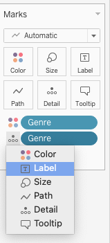
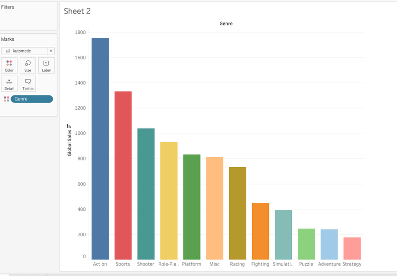
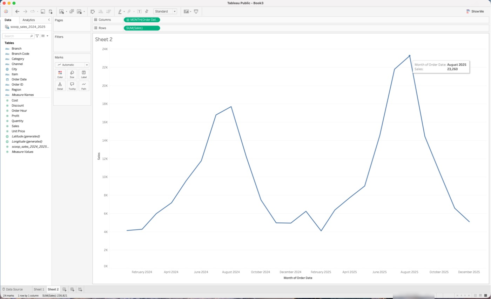
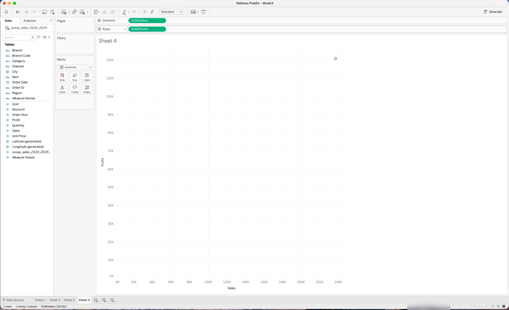
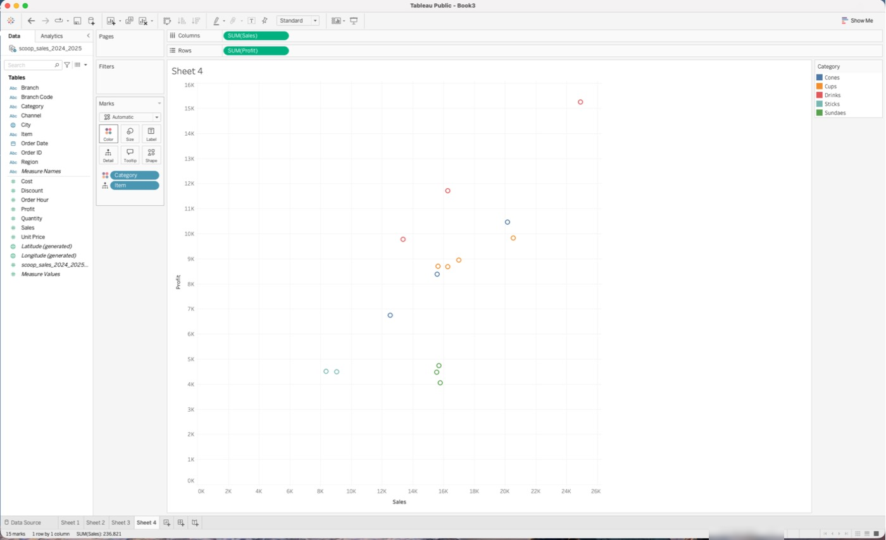
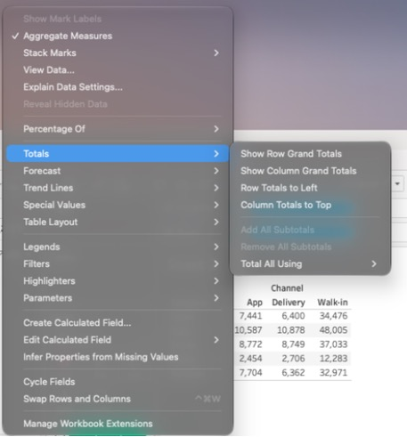

?teacher=1 בכתובת הדף: מה לומר, איפה לעצור ומה לבדוק לפני שממשיכים.מה נבנה במודול הזה מתחילים
אתם מסיימים את המודול עם חוברת גיליונות על Scoop & Go: עמודות מוערמות לפי אזור, גרף פיזור של 15 פריטים, מפת חום של שעות, היסטוגרמה, טבלת טקסט עם סיכומים, עץ מלבנים ועוגה אחת שלמדתם מתי לא לבנות. בדרך אתם שולטים בכרטיס Marks: צבע, גודל, תוויות, טולטיפ ופירוט.
מה להכין: Tableau Public Desktop עם הקובץ scoop_sales_2024_2025.csv טעון (המודולים 2 ו-3), ושדות מומרים נכון לפי מודול 4: תאריך כתאריך, וכחול וירוק שאתם יודעים לקרוא. אם אתם עובדים בדפדפן (web authoring), רוב השלבים דומים, אבל חלק מהאפשרויות המתקדמות (למשל בהגדרות הצבע) עשויות להופיע רק בגרסת ה-Desktop. שמות התפריטים והכפתורים במודול נבדקו מול Tableau Public עצמו, וחלק מהצילומים כאן הם צילומי מסך אמיתיים מאותם נתונים.
חוברת הקורס: את הגיליונות החשובים של המודול שומרים בחוברת העבודה של הקורס, scoop-course.twbx, שיצרתם פעם אחת במודול 1 עם File > Save As.... מכאן והלאה שומרים רק עם File > Save. בסעיף 11 יש תרגיל שמוסיף לחוברת שלושה גיליונות.
כרטיס Marks: מה כל כפתור עושה
עד עכשיו בניתם גרפים על ידי גרירת שדות ל-Columns ול-Rows. אבל מי שמנהל את Scoop & Go רוצה לדעת בגרף אחד גם כמה מכרנו, גם כמה הרווחנו וגם כמה יחידות. את זה עושים בכרטיס Marks.
Marks): החלונית שמשמאל לגרף ושקובעת איך נראה כל סימן: סוג הסימן למעלה, ומתחתיו כפתורים שאפשר לגרור אליהם שדות. דוגמה: גוררים את Profit אל Color, והעמודות מקבלות גוון לפי הרווח.הדגמה: 5 קטגוריות, 5 סימנים. כל עמודה היא סימן אחד.

הנה כל הכפתורים, ומה כל אחד עושה בנתונים של Scoop & Go:
| כפתור | מה הוא עושה | דוגמה מ-Scoop & Go |
|---|---|---|
Color | צובע. ממד נותן צבע לכל ערך. מדד נותן גוון לפי גודל הערך. | למשל Region ב-Color: ארבעה צבעים. SUM(Profit) ב-Color: כהה יותר, רווח גדול יותר. |
Size | מגדיל או מקטין את הסימן לפי שדה. | למשל SUM(Quantity) ב-Size בגרף פיזור: פריט שנמכר יותר יחידות מקבל עיגול גדול יותר. |
Label או Text | כותב ערך על הסימן. | למשל SUM(Sales) ב-Label: המכירות כתובות מעל כל עמודה. |
Detail | מפצל סימן לכמה סימנים, בלי לשנות צבע או גודל. | למשל Item ב-Detail: במקום נקודה אחת מקבלים 15 נקודות, אחת לכל פריט. |
Tooltip | מוסיף שדות לחלונית שקופצת כשמעבירים עכבר על סימן. מדד לא משנה את מספר הסימנים. ממד כן: הוא מפצל כמו Detail. | למשל Profit ו-Quantity ב-Tooltip: מעל העמודה Cups רואים גם את הרווח וגם את מספר היחידות. |
Shape | צורה שונה לכל ערך (עיגול, משולש, איקס). מופיע כשסוג הסימן הוא Shape. | למשל Channel ב-Shape: צורה אחת להליכה, אחת לאפליקציה ואחת למשלוח. |
Path | קובע באיזה סדר ובאיזו צורה מחברים את נקודות הקו (ישר, מדרגות). מופיע בקווים. | בגרף קו חודשי, Path קובע איך מחברים בין חודש לחודש. |
Angle | קובע את גודל הפרוסה בעוגה. מופיע רק בסוג Pie. | למשל SUM(Sales) ב-Angle: ערוץ ההליכה תופס את רוב העוגה. |
מעבירים שדה בין הכפתורים
שדה שכבר יושב בכרטיס אפשר להעביר בלי לגרור: לוחצים על הסמל הקטן שמשמאל לפיל, ובתפריט בוחרים ל-Color, Label, Size, Path, Detail או Tooltip. הצילומים מנתוני משחקי וידאו (vgsales), אבל הכפתורים זהים.


Detail: הכפתור שמשנה את מספר הסימנים
רוב הכפתורים משנים איך סימן נראה. Detail משנה כמה סימנים יש. כל ממד שנמצא בגרף (על Columns, Rows, Color, Detail ועוד) מפצל את הסימנים: סימן אחד לכל שילוב של ערכים. מספר הסימנים הוא רמת הפירוט של הגרף. הנפשה קצרה:
- גרף פיזור: SUM(Sales) על ציר אחד ו-SUM(Profit) על השני, בלי ממד. סימן אחד: הסכום של כל 6,575 השורות (מכירות 236,820.90, רווח 120,722.90).
- גוררים Category ל-Detail. עכשיו יש 5 סימנים, אחד לכל קטגוריה. הציר התכווץ כי כל נקודה קטנה בהרבה מהסכום הכולל.
- מחליפים את Category ב-Item, ועכשיו יש 15 סימנים. הנקודה הימנית העליונה היא Milkshake (מכירות 24,902.80, רווח 15,242.80).
- גוררים Category גם ל-Color. אותן 15 נקודות, עכשיו עם צבע לפי קטגוריה. שלושת הסנדיים נמצאים נמוך: מכירות כמו של כוסות, רווח הרבה יותר קטן.
- גוררים SUM(Quantity) ל-Size. עיגול גדול = יותר יחידות: Milkshake 966 יחידות, Banana Split 419.
השלבים הראשון והרביעי של ההנפשה מופיעים גם בצילומי מסך אמיתיים בסעיף 7: סימן אחד (1 mark), ואחרי Item ב-Detail ו-Category ב-Color, 15 סימנים (15 marks).
עכשיו לנסות בעצמכם. בהדמיה למטה יש כבר מכירות על ציר אחד ורווח על השני, וסימן אחד. הוסיפו ממד כך שיהיו 15 סימנים.
סיור בכל הכפתורים, בתוכנה
- פתחו גיליון חדש עם Scoop & Go. גררו Category ל-
Columnsואת Sales ל-Rows. למה: גרף עמודות פשוט הוא נקודת ההתחלה. תוצאה: 5 עמודות, ובשורת הסטטוס בתחתית החלון:5 marks 1 row by 5 columns SUM(Sales): 236,821. - גררו Region מחלונית הנתונים אל הכפתור
Detail. למה: ממד חדש בכרטיס מפצל כל סימן, בלי לשנות את הצורה. תוצאה: 20 marks. גובה העמודות לא השתנה (Cups עדיין 69,470.00 סך הכול), אבל כל עמודה מחולקת לארבעה סימנים. העבירו עכבר על החלק התחתון של Cups: Region Center, מכירות 34,914.40. - גררו את הפיל Region מ-
DetailאלColor. למה: אותו ממד, אבל עכשיו כל ערך מקבל צבע. תוצאה: ארבעה צבעים וליגנדה של Region, ועדיין 20 marks. - הוציאו את Region מהכרטיס (גררו אותו החוצה). גררו Profit ל-
Color. למה: מדד על צבע נותן גוון לפי גודל, לא צבע נפרד לכל ערך. תוצאה: חזרתם ל-5 marks. בליגנדה הרציפה הטווח הוא בערך 9,000 (Sticks, הגוון הבהיר) עד 36,728 (Drinks, הכהה). - גררו Sales ל-
Label. למה: לראות את המספר בלי להעביר עכבר. תוצאה: מספר מעל כל עמודה, למשל Cups 69,470 (Tableau עשוי להציג אותו מעוגל). - גררו Quantity ל-
Tooltipוהעבירו עכבר על Cups. למה: פרטים שלא חייבים להיות על הגרף נכנסים לחלונית. תוצאה: בחלונית מופיע גם Quantity: 3,450.
תוצאה צפויה בסוף: 5 marks, עמודות בגוון לפי רווח, מספרי מכירות על העמודות, וב-Tooltip של Cups: מכירות 69,470.00, רווח 36,152.50, יחידות 3,450.
בשלב 2 העברתם את Region ל-Detail והעמודות נראו אותו גובה. אז מה השתנה בגרף, ולמה זה חשוב?
יש SUM(Sales) על Columns ו-SUM(Profit) על Rows, ואין אף ממד בגרף. כמה סימנים יש?
Detail. 6,575 סימנים היו מתקבלים רק אם כל שורה הייתה ממד נפרד (למשל Order ID).איזה כפתור נועד רק להוסיף סימנים, בלי לצבוע אותם, בלי לשנות את הגודל ובלי לכתוב עליהם?
Detail רק מפצל. Color מפצל וגם צובע. Tooltip נועד לחלונית: עם מדד הוא לא מפצל, ועם ממד הוא מפצל כמו Detail, אבל גם משנה את הטקסט שבחלונית. Angle קיים רק בעוגה.מספר הסימנים הוא מספר השורות בטבלה שמאחורי הגרף. אם בגרף יש Category ו-Region, הטבלה הזו היא טבלת Pivot עם 20 שורות. מי שמכיר Excel יכול לחשוב על כל סימן כעל שורה בטבלה מסכמת, ועל כל כפתור ב-Marks כעל עמודה אחרת בה.
גוררים ממד ל-Detail ולא רואים שום דבר. זה בסדר: Detail לא צובע ולא משנה גודל. הסימנים נוספו, וצריך לבדוק זאת בשורת הסטטוס או בטולטיפ. מי שמחפש שינוי ויזואלי צריך להוסיף גם Color או לעבור לגרף שבו הסימנים בולטים, כמו גרף פיזור.
5 marks 1 row by 5 columns SUM(Sales): 236,821 (בחלון צר הנוסח עשוי להתקצר). שימו לב שבעמודות עם Detail הקווים המפרידים בין הסימנים דקים ולפעמים כמעט בלתי נראים.סוגי סימנים: Automatic ומה שאחריו
בראש כרטיס Marks יש רשימה נפתחת. עד עכשיו היא אמרה Automatic ולא נגעתם בה. הנה מה Tableau עושה שם, ומתי כדאי להחליף ידנית.

Automatic, Bar, Line, Area, Square, Circle, Shape, Text, Map, Pie, Gantt Bar, Polygon, Density. מתחת לרשימה יש אזור Viz Extensions עם Add Extension (תוספים לגרפים), שאינו חלק מהמודול הזה.| סוג סימן | איך נראה | מתאים ל | איפה לומדים |
|---|---|---|---|
Bar | עמודה | להשוות בין ערכים | סעיף 5 |
Line | קו שמחבר נקודות | שינוי לאורך זמן | סעיף 6 |
Area | שטח צבוע מתחת לקו | זמן והרכב ביחד | סעיף 6 |
Square | ריבוע | מפת חום, טבלת הדגשה | סעיף 8 |
Circle | עיגול מלא | גרף פיזור ובועות | סעיף 7 |
Shape | צורה (בדרך כלל עיגול ריק) | נקודות עם צורה שונה לכל ערך | סעיף 7 |
Text | מספר או מילה | טבלאות | סעיף 8 |
Pie | פרוסות של עוגה | מעט חלקים של שלם אחד | סעיף 9 |
Map | נקודות או אזורים על מפה | נתונים גיאוגרפיים | מודול 7 |
Gantt Bar, Polygon, Density | פס לאורך זמן, צורה חופשית, כתם צפיפות | גרפים מתקדמים | מודול 12 |
- ממד Category על
Columnsומדד SUM(Sales) עלRows: Tableau בוחר עמודות,Bar. - תאריך רציף על Columns ומדד על Rows: Tableau בוחר קו,
Line. - מדד על Columns ומדד על Rows: Tableau בוחר
Shape, עיגולים ריקים. בלי ממד בגרף יש סימן אחד בלבד. - ממד על Columns וממד על Rows: Tableau בוחר
Text, וזו טבלה. עוד אין בה מספרים, כי לא שמתם מדד על Label. - עוגה, Gantt, Polygon, Density ומפה: Tableau לא בוחר אותם בעצמו. מחליפים ידנית ברשימה.
Automatic הוא הצעה טובה, לא פסיקה. כל פעם שהגרף נראה "כמעט נכון", בדקו קודם איזה סוג סימן Tableau בחר, ואחר כך תחליטו אם הוא מתאים לשאלה. זו ההחלטה שבאמת קובעת איך הגרף נקרא.
הכפתורים משתנים לפי סוג הסימן
לא לכל סוג סימן יש אותם כפתורים. בעוגה מופיע Angle, בקו מופיע Path, ובסוג Shape מופיע Shape. מתחת סרטוט של ארבעה כרטיסי Marks כאלה (הדמיה סכמטית):
Marks
Marks
Marks
Marks
בהדמיה הבאה מחליפים סוג סימן על אותו גרף, ורואים שמספר הסימנים והערכים לא משתנים. משתנה רק הצורה.
אותו גרף, חמישה סוגי סימנים
- גיליון חדש: Category ב-
Columns, Sales ב-Rows. למה: בסיס אחד שמשווים אליו. תוצאה: 5 עמודות. ברשימה בכרטיס Marks כתוב Automatic, והסמל הוא עמודות. - פתחו את הרשימה ובחרו
Circle. למה: לראות שהערך נשאר, והצורה מתחלפת. תוצאה: חמישה עיגולים באותם גבהים. Cups עדיין 69,470.00. - בחרו
SquareואזLine. למה: לראות מה קורה כשמחברים קטגוריות. תוצאה: קו שעולה ויורד בין חמש הקטגוריות. שימו לב ש-Cups ו-Drinks מחוברים, אבל אין שום "ערך באמצע" ביניהם. - בחרו
Area. תוצאה: שטח צבוע מתחת לקו, ועדיין 5 סימנים. - חזרו ל-
Automatic. תוצאה: עמודות. בשורת הסטטוס 5 סימנים לאורך כל הניסוי.
תוצאה צפויה: מספר הסימנים (5) והסכום של Cups (69,470.00) לא השתנו באף שלב. בסדר העולה של הערכים הקטגוריות הן Sticks 17,443.40, Sundaes 47,037.20, Cones 48,317.00, Drinks 54,553.30, Cups 69,470.00.
קו בין קטגוריות. קו מחבר נקודות ואומר "בין שתי הנקודות הערך משתנה בהדרגה". בין Cups ל-Drinks אין "בהדרגה": אלה שתי קטגוריות נפרדות. קו מתאים כשיש סדר טבעי, בעיקר זמן. לקטגוריות בונים עמודות. מה שנראה כמו מגמה בקו כזה הוא רק סדר האותיות או סדר המיון.
שמתם SUM(Sales) על Columns ו-SUM(Profit) על Rows, ואין ממדים בגרף. איזה סוג סימן Automatic נותן?
בניתם Category על Columns ו-Branch על Rows, והגרף יצא טבלה ריקה (בלי מספרים). מה חסר, ומה שתי דרכים להשלים?
Label (או ל-Text) ולקבל טבלת טקסט עם מספרים. או להחליף את סוג הסימן ל-Square ולגרור את SUM(Sales) ל-Color, ולקבל מפת חום. את שתיהן בונים בסעיף 8.צבע: מתי הוא אומר משהו ומתי הוא סתם צבעוני
ב-Scoop & Go יש 5 קטגוריות, 4 אזורים, 3 ערוצים ו-15 פריטים. כל אחד מהם יכול לקבל צבע, ואם צובעים בלי לחשוב מקבלים קשת בלי משמעות. קודם נבין מה צבע בכלל עושה.
Color נותן ארבעה צבעים, אחד לכל אזור.Color: עמודה כהה יותר, רווח גדול יותר.ארבעה סוגי פלטות
Tableau מבחין בין ארבעה סוגים של פלטות, והבחירה תלויה בסוג השדה ובמה שרוצים להגיד:
| סוג | מתאים ל | דוגמה מ-Scoop & Go | איך נראה |
|---|---|---|---|
| קטגורית (categorical) | ערכים בלי סדר | Region, Channel, Category | |
| מדורגת (ordinal) | ערכים בדידים עם סדר | רמת הנחה: 0, 10%, 20%, 50% | |
| רציפה (sequential) | מדד שכל ערכיו מאותו סימן (בלי שליליים) | SUM(Sales) לפי סניף | |
| מתפצלת (diverging) | מדד שחוצה אפס: חיובי מצד אחד, שלילי מהצד השני | רווח של קטגוריה לפי רמת הנחה, כשיש הפסד |
- Category ב-
Color: ממד, ולכן ליגנדה בדידה עם חמישה צבעים. שימו לב: אותה קטגוריה כבר כתובה מתחת לכל עמודה, ולכן הצבע כאן לא מוסיף מידע. - SUM(Profit) ב-
Color: מדד, ולכן ליגנדה רציפה. עכשיו הצבע אומר משהו חדש: אורך העמודה הוא מכירות, והגוון הוא רווח. Drinks (36,728) הכי כהה, Sticks (8,999.90) הכי בהיר. - סנדיים: שיעור הרווח ברמות הנחה 0%, 10%, 20% ו-50% הוא 31.7%, 23.9%, 13.3% ו--37.0% (הפסד). בפלטה רציפה אחת ההפסד נראה כמו "הכי בהיר", ולא כמו משהו שונה בסוגו.
- אותם מספרים בפלטה מתפצלת שמרכזה אפס: ההפסד מקבל צבע אחר לגמרי (כתום), וההבדל בין רווח להפסד נראה מיד.
כשהצבע רק חוזר על מה שהציר כבר אומר
שני הצילומים הבאים הם אותו גרף: סכום מכירות עולמיות של משחקי וידאו לפי ז׳אנר, ממוין. מימין Genre על Columns בלבד, ומשמאל Genre גם על Color.


שאלו את עצמכם לפני שאתם צובעים: "איזה מידע חדש הצבע מוסיף?" אם התשובה היא "אין, זה רק יפה", עדיף עמודות באותו צבע. צבע שווה את המקום שלו כשהוא נושא מידע שהציר לא נושא, למשל רווח על עמודות שהאורך שלהן הוא מכירות.
עורכים צבעים
לוחצים על הכפתור Color בכרטיס Marks ובוחרים Edit Colors..., או פותחים את התפריט של הליגנדה. בחלון שנפתח בוחרים פלטה ברשימה Palette:. לשדה רציף יש בחלון גם את האפשרויות Stepped Color (מדרגות צבע במקום מעבר חלק), Reversed (הופך את הכיוון), Use Full Color Range (נותן לשני הקצוות עוצמה מלאה גם כשהטווח לא סימטרי סביב אפס) ו-Include Totals (מכליל גם תאי סיכום בטווח הצבעים). הכפתור Advanced >> פותח את השדות Start:, End: ו-Center:: למשל Center: 0 קובע שמרכז הפלטה המתפצלת יהיה בדיוק באפס. כשהשדה בדיד, בוחרים ערך ברשימה ומצמידים לו צבע.
שקיפות וגבול
בכפתור Color יש גם אפקטים: Opacity (שקיפות), גבול לסימנים (Border) והילה (Halo). הם חשובים בעיקר כשסימנים חופפים. בגרף הפיזור שלכם עוד מעט, Banana Split, Halva Sundae ו-Brownie Sundae יושבים כמעט באותה נקודה, כי המכירות שלהם הן 15,788.00, 15,699.60 ו-15,549.60. בשקיפות 100% עיגול אחד מכסה את האחרים.
הדגמה סכמטית: אותם עיגולים בשקיפות מלאה ובחצי שקיפות עם גבול.
הטבלה: קטגוריה (שורות) לפי רמת הנחה (עמודות). המספרים אמיתיים, מתוך 6,575 השורות. לתא אחד, Sundaes ב-50%, יש הפסד. בחרו מדד ופלטה, וראו אם אפשר להבחין בהפסד.
אורך הוא מכירות, גוון הוא רווח
- גיליון חדש: Item ב-
Rowsו-Sales ב-Columns. מיינו מהגדול לקטן (כפתור המיון בסרגל הכלים). למה: עמודות אופקיות ממוינות קוראים הכי בקלות. תוצאה: 15 עמודות. למעלה Milkshake (24,902.80), למטה Fruit Stick (8,377.20). - גררו Profit ל-
Color. למה: לבדוק אם הפריטים הגדולים הם גם הרווחיים. תוצאה: ליגנדה רציפה מבהיר לכהה, בטווח של בערך 4,056 עד 15,243. - העבירו עכבר על Milkshake ועל Banana Split. למה: לקרוא את המספרים ולא לנחש לפי גוון. תוצאה: Milkshake מכירות 24,902.80 ורווח 15,242.80 (העמודה הכהה ביותר). Banana Split מכירות 15,788.00 ורווח 4,056.00 (הכי בהיר).
- לחצו על
Color>Edit Colors. סמנוReversedובדקו מה השתנה. אחר כך החזירו. למה: לדעת איפה שולטים בכיוון הצבעים. תוצאה: הכהה והבהיר מתחלפים, והעמודות והמספרים לא משתנים.
תוצאה צפויה: 15 סימנים. העמודות הארוכות והבהירות הן שלושת הסנדיים: Banana Split (רווח 4,056.00), Brownie Sundae (4,473.60) ו-Halva Sundae (4,731.60). הם מוכרים בערך כמו כוסות אבל מרוויחים בערך חצי. שימו לב שגם Choco Stick (4,483.70) ו-Fruit Stick (4,516.20) בהירים, אבל הם עמודות קצרות. זה אותו צבע בשני מצבים שונים.
מפה קטנה עם הפסד: פלטה מתפצלת
- בחלונית הנתונים, לחצו ימני על #Discount ובחרו
Convert to Dimension(הופך מדד לממד). למה: רמות ההנחה הן ארבעה ערכים קבועים (0, 0.1, 0.2, 0.5), וצריך אותן כקטגוריות ולא כמספר שמסכמים. תוצאה: Discount עבר לאזור הממדים (כחול). - גיליון חדש: Category ב-
Rowsו-Discount ב-Columns. תוצאה: Tableau נותן טבלת טקסט ריקה (שני ממדים). - החליפו את סוג הסימן ל-
Squareוגררו Profit ל-Color. למה: ריבוע צבוע לפי רווח הוא מפת חום. תוצאה: 18 סימנים (5 קטגוריות כפול 4 רמות הנחה, פחות שני שילובים שלא קיימים: Drinks ו-Sticks אף פעם לא נמכרו ב-50%). - חפשו את התא היחיד בצבע שונה. תוצאה: Sundaes ב-0.5, ברווח של -747.00 (הפסד). שאר התאים בגווני כחול, ורובם חיוורים, כי עמודת ה-0 (23,667.50 לקונוסים ו-33,549.50 לכוסות) גדולה בהרבה מהאחרות.
- פתחו
Edit Colors. בדקו איזו פלטה נבחרה ואיפה המרכז שלה. (כש-Tableau רואה ערכים שליליים וחיוביים, הוא בדרך כלל בוחר פלטה מתפצלת שמרכזה באפס. אם אצלכם לא, בחרו ב-Palette:פלטה מתפצלת בעצמכם.) לחצוAdvanced >>, סמנוCenter:והקלידו 0. הדליקו וכבוUse Full Color Range. למה: מרכז באפס מבטיח שרק הפסד יקבל את הצבע השני, ו-Full Color Range מראה איך הטווח הלא סימטרי (-747 מול 34,368 של Drinks ב-0) משפיע על עוצמת הכתום. תוצאה: עם Full Color Range התא של ההפסד כתום חזק. בלעדיו הוא כתום חלש, כי הקצה השלילי רחוק מאפס הרבה פחות מהקצה החיובי. - עכשיו בחרו פלטה רציפה (כחולה) במקום המתפצלת. למה: לבדוק מה קורה להפסד. תוצאה: Sundaes ב-0.5 נהיה "התא הבהיר ביותר", וכבר לא רואים שהוא הפסד.
תוצאה צפויה: 18 סימנים, והתא היחיד עם ערך שלילי הוא Sundaes ב-0.5: SUM(Profit) = -747.00. הוא מורכב משלושה פריטים: Banana Split -328.00, Halva Sundae -216.00 ו-Brownie Sundae -203.00. זה המבצע של 50% הנחה, ויש בו 292 שורות (כולן ב-2025).
קשת של צבעים על מדד. אם מציירים מדד בגווני אדום, צהוב, ירוק וכחול, העין לא יודעת מה "גבוה". אין סדר טבעי בין הצבעים האלה. למדד בוחרים גוון אחד שמתכהה, או שני גוונים משני צדי אפס. קשת מתאימה רק לקטגוריות, ושם גם כדאי להגביל לחמישה או שישה צבעים.
אדום וירוק כשהצבע היחיד שמבדיל. חלק מהאנשים לא מבחינים בין אדום לירוק, ובכל מקרה מדפסת בשחור לבן תמחק את ההבדל. בכפתור Color > Edit Colors יש פלטה בשם Color Blind. עוד כלל טוב: הבדל בבהירות, לא רק בגוון, וצורות (Shape) כשצריך.
אותו ערך, שני צבעים בשני גיליונות. אם Cups כחול בגיליון אחד וכתום בגיליון אחר, מי שרואה את שניהם בדשבורד מתבלבל. בחרו צבע לכל קטגוריה פעם אחת והשתמשו בו בכל הגיליונות. (במודול 13 נתאים את זה בדשבורד.)
בעיצוב דשבורדים בארגונים נהוג להשאיר את רוב הגרף באפור או בגוון אחד, ולהשתמש בצבע בולט אחד לדבר שרוצים שיראו, כמו ההפסד. זה עובד כי העין נמשכת למה שנראה שונה. צבע בכל מקום משמעו שום דבר לא בולט.
רוצים לצבוע סניפים לפי הרווח, כשחלק מהסניפים הפסדיים וחלק רווחיים. איזו פלטה מתאימה?
בגרף עמודות של מכירות לפי Item, כל פריט מקבל Color לפי Item. מה הבעיה?
גרף עמודות: אורך = מכירות לפי פריט, צבע = רווח. מה אפשר לראות בו שלא רואים בגרף אורך בלבד, ומה עדיין לא רואים?
גודל, תוויות וטולטיפ
שלושה כפתורים שמחליטים כמה מידע נכנס לגרף וכמה נשאר מוסתר עד שמעבירים עכבר. ב-Scoop & Go זה ההבדל בין גרף שאפשר לקרוא לגרף עמוס.
Size): הכפתור שקובע כמה גדול כל סימן. דוגמה: SUM(Quantity) ב-Size בגרף פיזור: Milkshake (966 יחידות) יקבל עיגול גדול יותר מ-Banana Split (419 יחידות).הכפתור Size עובד בשני אופנים. אם גוררים אליו שדה, הגודל משתנה לפי הערך. אם לוחצים עליו מקבלים מחוון (slider) שמגדיל או מקטין את כל הסימנים ביחד, למשל כדי לעבות עמודות או לצמצם בועות חופפות. בעיגולים הגודל מייצג שטח, והעין לא טובה בהשוואת שטחים: אם צריך להשוות בדיוק, תוסיפו תווית.
Label): טקסט שמודפס על הסימן עצמו. דוגמה: SUM(Sales) ב-Label: מעל כל עמודה כתוב כמה מכרנו.יש שתי דרכים להדליק תוויות: הכפתור Show Mark Labels בסרגל הכלים (מדליק תוויות של הערכים שעל הצירים), או גרירה של כל שדה אל Label (אז מציגים מה שרוצים). לחיצה על Label פותחת חלון עם אפשרויות, כמו גופן, יישור, ובאזור Marks to Label בוחרים אילו סימנים מקבלים תווית. הרבה פעמים תווית רק על המקסימום והמינימום מספיקה, והגרף נשאר נקי.
את המספרים עצמם מעצבים דרך Format... (לחיצה ימנית על הפיל, או על המספר). בחלונית שנפתחת בוחרים ברשימת המספרים Number (Custom), ושם קובעים כמה ספרות אחרי הנקודה להציג וגם יחידות תצוגה: Display Units: > Thousands (K). 24,902.80 עם הרבה ספרות נקרא הרבה יותר גרוע מ-24.9K.
Tooltip): החלונית שקופצת כשמעבירים עכבר על סימן. דוגמה: מעל העמודה Cups מופיע "Category: Cups, Sales: 69,470.00".בטולטיפ שמים מה שלא חייב להיות על הגרף, אבל כדאי שיהיה זמין: רווח, כמות, מספר שורות. גוררים שדות אל Tooltip, ולוחצים על הכפתור כדי לערוך את הנוסח. בעורך כותבים משפט רגיל, ושדות מוטמעים בו בתוך סוגריים משולשים, בסגנון <Category> ו-<SUM(Sales)>. כפתור Insert מוסיף שדה בלי להקליד.
Sales: <SUM(Sales)>
Profit: <SUM(Profit)>
Units: <SUM(Quantity)>
בסימולציה יש גם את שדה ספירת השורות. בגרסה הנוכחית הוא נקרא על שם הקובץ, scoop_sales_2024_2025.csv (Count), ומופיע בתחתית רשימת המדדים. בגרסאות ישנות של Tableau אותו שדה נקרא Number of Records, ותפגשו את השם הזה במדריכים רבים. הנה סימולציה. העבירו עכבר (או הקישו) על עמודה, והדליקו שדות לטולטיפ. שימו לב לשורה של Region: אם גוררים ממד לטולטיפ כרגיל, הוא מפצל את העמודה (כמו Detail). כדי שיישאר סימן אחד לקטגוריה, הופכים אותו ל-Attribute (לחיצה ימנית על הפיל > Attribute), ואז בעמודה שיש בה ארבעה אזורים מופיעה כוכבית.
תוויות נקיות
רוב הגרפים הלא קריאים הם גרפים שבהם התוויות מתנגשות. הסימולציה הבאה מציירת את 15 הפריטים של Scoop & Go עם המכירות האמיתיות שלהם, ובודקת בפועל כמה תוויות נחתכות או מתנגשות.
טולטיפ שאפשר לקרוא
- גיליון חדש: Category ב-
Columns, Sales ב-Rows. מיינו מהגדול לקטן. תוצאה: Cups, Drinks, Cones, Sundaes, Sticks. - גררו Profit, Quantity ואת שדה הספירה scoop_sales_2024_2025.csv (Count) (בגרסאות ישנות: Number of Records) אל
Tooltip. למה: פרטים נוספים בלי לעמוס על הגרף. תוצאה: עדיין 5 marks, כי מדדים על Tooltip לא מפצלים. - העבירו עכבר מעל Cups. למה: לבדוק שהטולטיפ מציג את ערכי העמודה כולה. תוצאה: Sales 69,470, Profit 36,152.50 (בטולטיפ מעוגל לשלם), Quantity 3,450, ושורת הספירה 1,974.
- לחצו על הכפתור
Tooltipוערכו את הטקסט:<Category>: מכרנו <SUM(Sales)> ו-<SUM(Quantity)> יחידות. למה: משפט קריא עדיף על רשימת שמות שדות. תוצאה: מעל Cups מופיע משפט עם 69,470 ו-3,450. - גררו Region אל
Tooltip. למה: לראות מה קורה לממד שנכנס לכרטיס Marks. תוצאה: שורת הסטטוס קופצת ל-20 marks. ממד על Tooltip מפצל כמו Detail: כל עמודה מתחלקת לארבעה חלקים, והטולטיפ מראה אזור אחד בלבד. מעל החלק התחתון של Cups: Region Center, מכירות 34,914.40. - לחצו ימני על הפיל Region שבכרטיס ובחרו
Attribute. למה: Attribute מציג ממד בלי לפצל סימנים. תוצאה: חוזרים ל-5 marks, הפיל נקרא ATTR(Region), ובטולטיפ של Cups מופיעה כוכבית במקום אזור, כי בעמודה יש ארבעה אזורים.
תוצאה צפויה: ב-Cups: מכירות 69,470.00, רווח 36,152.50, 3,450 יחידות, 1,974 שורות. בשלב 5: 20 marks. בשלב 6: שוב 5 marks וכוכבית ב-Region. Tableau מציג בטולטיפ מספרים מעוגלים בלי עשרוניות. זה אותו ערך.
חמש תוויות, כולן קריאות
- גיליון חדש: Item ב-
Columnsו-Sales ב-Rows. הדליקוShow Mark Labels. למה: רואים את הבעיה לפני שפותרים אותה. תוצאה: 15 עמודות אנכיות עם תוויות, ושמות הפריטים מסובבים או חתוכים. - החליפו שורות ועמודות (כפתור Swap בסרגל הכלים). למה: עמודות אופקיות נותנות לשמות ארוכים מקום. תוצאה: 15 עמודות אופקיות עם שמות מלאים.
- מיינו מהגדול לקטן. תוצאה: Milkshake 24,902.80 ראשון, Fruit Stick 8,377.20 אחרון.
- לחצו ימני על הפיל Sales ובחרו
Format.... בחלונית שנפתחת, ברשימת המספרים בחרוNumber (Custom), ספרה אחת אחרי הנקודה, ו-Display Units:>Thousands (K). למה: 24.9K נקרא מהר יותר מ-24,902.80. תוצאה: 24.9K, 20.5K, 20.2K ... 8.4K. - לחצו על
Label, ובאזורMarks to Labelבחרו להציג תווית רק למינימום ולמקסימום. למה: שתי תוויות מספרות את הסיפור בלי רעש. תוצאה: רק Milkshake ו-Fruit Stick מסומנים.
תוצאה צפויה: 15 סימנים, עמודות אופקיות ממוינות, והתוויות בפורמט K: Milkshake 24.9K, Pistachio Cup 20.5K, Double Cone 20.2K.
איזה מידע הכי מתאים לטולטיפ ולא לתווית על הגרף?
שלושת הכפתורים האלה הם שלוש דרגות של "כמה אני מראה": גודל וצבע מראים מגמה במבט, תווית מראה מספר מדויק, וטולטיפ שומר פרטים למי שחוקר. עדיף להחליט מראש מה חשוב באמת, ולא להדליק הכול.
תוויות שמתנגשות ומכסות זו את זו. עשרות מספרים צפופים הופכים את הגרף לכתם. התיקון הוא אחד מאלה: להציג רק מקסימום ומינימום, לקצר מספרים (K), להפוך לעמודות אופקיות, או להוריד את התוויות ולהשאיר ציר. הסימולציה למעלה מראה לכם בדיוק איזו תווית נחתכת.
טולטיפ שמציג מספר אחר ממה שציפיתם. הטולטיפ מציג את ערך הסימן שמתחת לעכבר. אם הוספתם ממד ל-Detail, או גררתם ממד ל-Tooltip, כל סימן הוא שילוב של ערכים, והטולטיפ מציג רק חלק מהעמודה. בדקו תמיד את מספר ה-marks בשורת הסטטוס ואיזה סימן אתם מצביעים עליו.
בדוחות הנהלה מקובל שהמספר החשוב ביותר מופיע גדול על הגרף, והפירוט (פילוחים, השוואות, שורות) נשאר בטולטיפ. כך גרף אחד משרת גם את מי שמסתכל לשנייה וגם את האנליסט שנכנס לפרטים.
קטלוג הגרפים, חלק א: עמודות פשוטות, מוערמות, צמודות ו-100%
אותם נתונים אפשר להציג בארבע צורות של עמודות, וכל אחת עונה על שאלה אחרת. נשתמש בשאלה אחת של Scoop & Go: כמה מכרנו בכל קטגוריה, ואיך זה מתחלק בין ארבעת האזורים?
בכל גרף בקטלוג יש כרטיס מתכון: מתי משתמשים, צורת הנתונים (אילו שדות צריך), המדפים, בדיקה (מספר שאתם אמורים לראות), טעות נפוצה ודוגמה לקריאה. כל המספרים חושבו מנתוני Scoop & Go, ובתוכנה Tableau עשוי להציג אותם מעוגלים.
גרף עמודות פשוט (Bar)
| מתי | משווים ערך אחד בין קבוצות: כמה מכרנו בכל קטגוריה. |
|---|---|
| צורת נתונים | ממד אחד, מדד אחד. |
| מדפים | Rows: Category · Columns: Sales (עמודות אופקיות), או הפוך (אנכיות). סוג סימן: Bar. |
| בדיקה | אמור לצאת: 5 סימנים. Cups 69,470.00, Drinks 54,553.30, Cones 48,317.00, Sundaes 47,037.20, Sticks 17,443.40. |
| טעות נפוצה | להשאיר סדר אלפביתי במקום למיין, או להסתיר חלק מהציר כדי להגזים בפער. |
| דוגמה לקריאה | "Cups מובילות עם 69,470.00, בערך פי 4 מ-Sticks עם 17,443.40." |
עמודות מוערמות (Stacked bar)
| מתי | רוצים גם סך הכול לכל קבוצה וגם איך הוא מתחלק לכמה חלקים. |
|---|---|
| צורת נתונים | שני ממדים ומדד אחד. הממד השני בעל מעט ערכים (עד כ-5). |
| מדפים | Columns: Category · Rows: Sales · Color: Region. |
| בדיקה | אמור לצאת: 20 סימנים. בעמודת Cups: Center 34,914.40, South 16,648.40, Jerusalem 9,347.20, North 8,560.00. הסכום 69,470.00. |
| טעות נפוצה | יותר מדי צבעים, או לבקש מהקורא להשוות חלקים באמצע העמודה. |
| דוגמה לקריאה | "בכל קטגוריה בערך חצי מהמכירות הן ב-Center (בכוסות 50.3%). רק את החלק התחתון קל להשוות בין עמודות." |
עמודות צמודות (Side-by-side)
| מתי | רוצים להשוות בין הקבוצות עצמן בתוך כל קטגוריה, מאותו קו בסיס. |
|---|---|
| צורת נתונים | שני ממדים ומדד אחד, עד שלוש או ארבע עמודות בכל קבוצה. |
| מדפים | Columns: Category ואחריו Region (שני פילים כחולים, אחד ליד השני) · Rows: Sales. אפשר להוסיף Region גם ל-Color. |
| בדיקה | אמור לצאת: 20 סימנים, בחמש קבוצות של ארבע. הראשונה: Cups: Center 34,914.40 לעומת South 16,648.40. |
| טעות נפוצה | להחליף בטעות את סדר הפילים: אז הקבוצה הגדולה היא Region ולא Category. |
| דוגמה לקריאה | "בכל קטגוריה Center גדול בערך פי שניים מ-South (בכוסות 34,914.40 מול 16,648.40)." |
עמודות מוערמות ל-100% (100% stacked)
| מתי | משווים הרכב (אחוזים) ולא גודל: איך מתחלקת כל קטגוריה בין האזורים. |
|---|---|
| צורת נתונים | כמו בעמודות מוערמות. |
| מדפים | בונים עמודות מוערמות. לוחצים ימני על Sales > Quick Table Calculation > Percent of Total. אחר כך Edit Table Calculation ו-Compute Using: Region. |
| בדיקה | כל עמודה מסתכמת ל-100%. Center בכוסות 50.3% (34,914.40 מתוך 69,470.00). אם יצא 14.7%, הגדרתם Compute Using לא נכון. |
| טעות נפוצה | הגדרת Compute Using שגויה, או לשכוח שהגדלים המוחלטים נעלמו: קטגוריה קטנה נראית חשובה כמו גדולה. |
| דוגמה לקריאה | "ההרכב דומה בכל הקטגוריות: Center כ-50%, South כ-23%, Jerusalem כ-14%, North כ-10%." |
Quick Table Calculation): חישוב שרץ על המספרים שכבר מופיעים בגרף, כמו אחוז מהסך. דוגמה: Percent of Total מחלק כל חלק בסכום של כולם. את החישובים האלה לומדים לעומק במודול 9.Compute Using: ההגדרה שקובעת בתוך איזו קבוצה של סימנים מחלקים. דוגמה: Compute Using על Region מחלק את Center-Cups ב-Cups כולה (34,914.40 מתוך 69,470.00, כלומר 50.3%), ולא בכל הטבלה (14.7%).- עמודות פשוטות: 5 סימנים. רואים רק כמה מכרנו בכל קטגוריה.
- מוסיפים Region ל-
Color: אותן עמודות, אבל כל אחת חתוכה לארבעה חלקים (20 סימנים). אפשר לראות את הסכום ואת החלוקה. - מעבירים את Region אל
Columns(ליד Category): העמודות עומדות זו ליד זו על קו בסיס אחד. קל להשוות בין אזורים, אבל אין סכום לכל קטגוריה. - הופכים כל עמודה ל-100%: רואים רק הרכב. Center כמעט תמיד כחצי, ואי אפשר לדעת איזו קטגוריה גדולה.
הבחירה בין הארבעה היא בחירה בשאלה. פשוט: "מי הגדול?". מוערם: "כמה סך הכול, ובערך איך מתחלק?". צמוד: "מי מהחלקים גדול יותר בכל קבוצה?". 100%: "האם ההרכב שונה בין הקבוצות?". מי שלא יודע מה השאלה, בוחר מוערם כברירת מחדל, וזה בדיוק המקרה הפחות מדויק.
Tables
Marks
Region
- Category ב-Columns: חמש קבוצות על הציר האופקי.
- SUM(Sales) ב-Rows: הגובה הוא מכירות.
- Region ב-Color: כל עמודה מתפצלת לארבעה צבעים, אחד לכל אזור, והם מוערמים אחד על השני.
- חלונית הנתונים משמאל: הכותרת שלה היא Tables. הממדים מעל הקו הדק והמדדים מתחתיו, בלי כותרות נפרדות (כאן מוצגים רק חלק מהשדות).
עכשיו לבנות. קודם בהדמיה, אחר כך ב-Tableau עצמו.

Show Me: כפתור בסרגל הכלים שמציע ובונה גרף מהשדות שבחרתם. דוגמה: בוחרים Item ו-Sales, ו-Show Me מציע, בין היתר, עץ מלבנים.
Show Me בסרגל הכלים. לוחצים על גרף והתוכנה בונה אותו מהשדות שבחרתם. מעבירים עכבר מעל כל גרף, ובתחתית החלונית מופיע מה הוא דורש. למשל לעמודות מוערמות: For stacked bars try ממד אחד או יותר (1 or more Dimensions) ומדד אחד או יותר (1 or more Measures). הטבלה המלאה בסעיף 9. Show Me לא מחליף הבנה: הוא בונה מהר, אבל אתם צריכים לדעת למה הוא בחר.עמודות מוערמות לפי אזור
- גיליון חדש: Category ב-
Columns, Sales ב-Rows. מיינו מהגדול לקטן. למה: מסדרים את העמודות לפני שמוסיפים חלקים. תוצאה: Cups, Drinks, Cones, Sundaes, Sticks. - גררו Region אל
Color. למה: כל אזור הופך לצבע, והעמודות מתפצלות לחלקים מוערמים. תוצאה: 20 סימנים, ליגנדה של 4 אזורים. - העבירו עכבר מעל כל חלק של העמודה Cups. תוצאה: Center 34,914.40, South 16,648.40, Jerusalem 9,347.20, North 8,560.00.
- לחצו על
Label(או הדליקוShow Mark Labels) כדי לכתוב את הערכים. תוצאה: מספר על כל חלק. בחלקים הצרים (North ב-Sticks: 1,596.40) התווית אולי צפופה, וזה בסדר.
תוצאה צפויה: 20 סימנים, וסכום החלקים בכל עמודה שווה לעמודה הפשוטה: Cups 69,470.00. Center הוא החלק הגדול בכל קטגוריה. שימו לב: ב-Jerusalem וב-North יש סניף אחד בלבד (Jerusalem Mamilla ו-Haifa German Colony), ב-Center ארבעה סניפים וב-South שלושה, ולכן הפערים בין האזורים נובעים גם ממספר הסניפים.
אותם נתונים, עמודות צמודות
- שכפלו את הגיליון (לחיצה ימנית על הלשונית >
Duplicate). למה: לשמור את המוערם ולהשוות מולו. - בגיליון החדש הוציאו את Region מ-
Colorוגררו אותו אלColumns, מימין ל-Category. למה: שני ממדים על Columns הם שתי רמות של כותרות. תוצאה: 20 עמודות בחמש קבוצות, כל קבוצה עם ארבעה אזורים. - החזירו את Region גם ל-
Color. תוצאה: אותם צבעים כמו במוערם, ועדיין 20 סימנים. - החליפו את סדר הפילים על Columns (Region לפני Category). תוצאה: ארבע קבוצות (האזורים), בכל אחת חמש עמודות (קטגוריות). אותם 20 סימנים, שאלה אחרת.
תוצאה צפויה: 20 סימנים בשני המצבים. בצמוד קל לראות ש-Center גדול מכל אזור אחר בכל קטגוריה, אבל קשה לדעת כמה Cups יש בסך הכול. מי שמשווה בין הגיליונות מבין למה צריך לבחור לפי שאלה.
עמודות ל-100%
- חזרו לגיליון המוערם. לחצו ימני על Sales ב-
Rows>Quick Table Calculation>Percent of Total. למה: ממירים כל חלק לאחוז. תוצאה: הציר עכשיו באחוזים, אבל העמודות כנראה לא מגיעות ל-100%: Center בכוסות הוא כ-14.7%, כלומר 34,914.40 מתוך כל 236,820.90 בגיליון. - לחצו שוב ימני על הפיל >
Compute Usingובחרו Region (אוEdit Table Calculation..., ובחלון שנפתחSpecific Dimensionsעם Region בלבד מסומן). למה: כך כל עמודה (קטגוריה) מסתכמת בנפרד ל-100%. תוצאה: כל העמודות מגיעות בדיוק ל-100%. Cups: Center 50.3%, South 24.0%, Jerusalem 13.5%, North 12.3%. - הדליקו תוויות. תוצאה: אחוזים על כל חלק. Sticks: North 9.2% בלבד, ו-Center 52.9%.
תוצאה צפויה: אם כל העמודות הגיעו ל-100% ו-Cups-Center הוא 50.3%, הכול נכון. אם ראיתם 14.7%, ה-Compute Using היה על כל הטבלה ולא על Region.
רוצים לדעת באיזה אזור כל קטגוריה מוכרת הכי הרבה, ולהשוות בין האזורים בקלות. מה מתאים?
בנית 100% מוערם, ו-Center בכוסות יצא 14.7% במקום 50.3%. מה הסיבה הסבירה?
קורא רואה את המוערם וטוען: "North מוכר בסנדיים יותר מ-Jerusalem". האם אפשר לבדוק זאת מהגרף? ומה הגרף הנכון לשאלה?
מוערם עם יותר מדי צבעים. מעבר ל-4 או 5 חלקים אי אפשר לעקוב אחרי הצבעים, כמו בצילום של 12 הז׳אנרים למעלה. אם יש הרבה ערכים: מצמצמים לחמשת הגדולים ו"אחר", או עוברים לעמודות צמודות, או לפצל לכמה גיליונות קטנים (בהמשך הקורס).
100% בלי גודל. גרף 100% מסתיר כמה גדולה כל קבוצה. Jerusalem בכוסות היא 9,347.20, ו-Center 34,914.40, אבל בגרף 100% שתי העמודות באותו גובה. מי שמסתכל רק עליו עלול לחשוב ששתיהן חשובות באותה מידה. כשהגודל חשוב, תשאירו גם גרף עם ערכים מוחלטים.
בדוחות מכירות רבים מציגים הרכב של הכנסות (ערוצים, מוצרים, אזורים) בעמודות מוערמות. התקלה הנפוצה היא שמסתכלים על הצבע התחתון ומדלגים על השאר. אנליסטים מנוסים שואלים קודם: "איזה חלק אני מנסה להשוות?", ואם זה לא התחתון, הם עוברים לצמוד.
קטלוג הגרפים, חלק ב: קו ושטח, מה קורה לאורך זמן
רשת גלידה, אז השאלה הראשונה על זמן היא מתי השיא. שני גרפים עונים עליה: קו, ושטח שגם מראה הרכב. כאן חוזרים לכחול וירוק של מודול 4: לציר זמן אמיתי צריך תאריך ירוק.
גרף קו (Line)
| מתי | רוצים לראות איך ערך משתנה לאורך זמן, ולהשוות כמה סדרות. |
|---|---|
| צורת נתונים | תאריך ומדד. אפשר להוסיף ממד אחד (ל-Color) לכמה קווים. |
| מדפים | Columns: MONTH(Order Date) (ירוק: בתפריט התאריך, בקבוצה השנייה של התאריכים, השורה Month עם הדוגמה May 2015) · Rows: Sales. סוג סימן: Line. |
| בדיקה | אמור לצאת: 24 סימנים, נקודה לכל חודש של 2024 ו-2025. ינואר 2024: 4,139.30. אוגוסט 2024: 17,703.10. אוגוסט 2025: 23,259.90 (השיא). פברואר 2025: 4,097.00 (הנמוך ביותר). |
| טעות נפוצה | לבחור Month מהחלק העליון (כחול): ואז כל הינוארים מתחברים לכותרת אחת, ונשארים 12 סימנים במקום 24. |
| דוגמה לקריאה | "המכירות עולות כל קיץ ושיאן באוגוסט: 17,703.10 ב-2024 ו-23,259.90 ב-2025, עלייה של כ-31%." |
גרף שטח (Area)
| מתי | רוצים לראות את הסכום לאורך זמן וגם את ההרכב שלו, כשיש מעט חלקים. |
|---|---|
| צורת נתונים | תאריך, מדד וממד אחד. |
| מדפים | כמו הקו, ובנוסף Color: Region. סוג סימן: Area. אם השכבות לא מוערמות, בדקו בתפריט Analysis את Stack Marks. |
| בדיקה | אמור לצאת: 96 סימנים (24 חודשים כפול 4 אזורים). הקצה העליון של כל השכבות הוא סך המכירות החודשי: אוגוסט 2025 הוא 23,259.90, מזה Center 12,442.10. |
| טעות נפוצה | לקרוא את השכבות העליונות כאילו הן יושבות על אפס. הבסיס שלהן זז עם השכבות שמתחתיהן. |
| דוגמה לקריאה | "הקיץ מגדיל את כל האזורים. Center הוא השכבה הגדולה ביותר בכל חודש." |
Line או ב-Area מהרשימה בכרטיס Marks. הדוגמה: אותו גיליון בדיוק, וההחלפה ברשימה הופכת אותו משלוש קווים לשטחים צבועים.- קו לכל אזור: ארבעה קווים, ובסך הכול 96 סימנים. Center נמצא למעלה, וכל קו עולה בקיץ. קל לראות כל אזור לבד.
- סוג סימן Area: השכבות מוערמות, והקצה העליון הוא סך המכירות החודשי. עכשיו רואים גם את הסכום וגם את ההרכב.
- המלכודת: השכבה של North (הצבע האדום) יושבת על השכבות שמתחתיה. הגובה שלה לא נמדד מהציר, אלא מהעובי שלה. העובי באוגוסט 2024 ובאוגוסט 2025 קשה להשוואה כשהבסיס שלה זז. קו עושה את זה בקלות.
קו עונה על "איך כל חלק משתנה". שטח עונה על "איך הסכום משתנה, ואיך הוא מורכב". אם שואלים על חלק אחד ספציפי, שטח מערים אותו על האחרים ומקשה. אם שואלים על הסכום וגם על ההרכב, שטח נותן את שניהם בגרף אחד.
ציר רציף, ציר בדיד
אותו שדה Order Date נותן שני גרפים שונים לגמרי, תלוי באיזה חלק של התפריט בוחרים. כדי להיזכר:
| בחירה | צבע | מה Tableau בונה | סימנים | אוגוסט |
|---|---|---|---|---|
| Month מהקבוצה התחתונה (ליד Month כתוב May 2015) | ירוק | ציר זמן אחד, "Aug 2024", "Aug 2025" | 24 | שתי נקודות נפרדות: 17,703.10 ו-23,259.90 |
| Month מהקבוצה העליונה (ליד Month כתוב May) | כחול | 12 כותרות, ינואר עד דצמבר. כל השנים מתחברות | 12 | נקודה אחת: 40,963.00, סכום שני האוגוסטים |

Columns, SUM(Sales) על Rows. בשורת הסטטוס 24 marks. הטולטיפ על השיא: Month of Order Date: August 2025, Sales: 23,260 (23,259.90 מעוגל). בכרטיס Marks של קו מופיע הכפתור Path.מקו לשטח
- גיליון חדש: גררו Order Date אל
Columns. לחצו ימני על הפיל ובחרו Month מהקבוצה השנייה של התאריכים בתפריט, זו שליד Month מופיעה הדוגמה May 2015 (הפיל נהיה ירוק). גררו Sales אלRows. למה: ירוק נותן ציר זמן אמיתי. תוצאה: קו אחד עם 24 סימנים, שעולה בקיץ ויורד בחורף. - העבירו עכבר על שלוש נקודות. תוצאה: ינואר 2024 4,139.30. אוגוסט 2025 23,259.90 (השיא). פברואר 2025 4,097.00 (הנמוך ביותר).
- גררו Region אל
Color. למה: כל אזור הוא קו נפרד. תוצאה: ארבעה קווים, 96 סימנים. - החליפו את סוג הסימן ל-
Area. תוצאה: שטחים מוערמים. הקצה העליון באוגוסט 2025 הוא 23,259.90, מזה Center 12,442.10. - החזירו את סוג הסימן ל-
Line, הוציאו את Region מ-Colorוגררו Branch אלColor. למה: לראות סדרות באורכים שונים. תוצאה: 178 סימנים. הקו של Ashdod Beach Pop-up קצר מאוד: שלוש נקודות בלבד (יוני עד אוגוסט 2025). Rehovot Mall מתחיל ביוני 2025 ויש לו 7 נקודות.
תוצאה צפויה: 24 סימנים לקו אחד, 96 לארבעה אזורים, 178 לתשעה סניפים. סך המכירות ב-2024: 107,047.60. ב-2025: 129,773.30. אפשר לבדוק בעזרת Totals או בטולטיפ.
גרף קו חודשי עם Branch על Color. כמה נקודות יש לקו של Ashdod Beach Pop-up, שפעל רק בקיץ 2025?
מנהלת סניף אומרת: "בגרף השטח נראה ש-North לא גדל מ-2024 ל-2025". מה הבעיה בקריאה הזו, ומה הגרף שיעזור?
חודש כחול במקום ירוק. אם בחרתם Month מהחלק העליון, ינואר 2024 וינואר 2025 מתחברים לנקודה אחת, ואתם לא רואים את העלייה משנה לשנה. אם הקו שלכם מכיל רק 12 נקודות במקום 24, זה כנראה מה שקרה.
קו על תקופה לא שלמה. אם הנתונים נגמרים באמצע חודש, הנקודה האחרונה נראית כמו צניחה. ב-Scoop & Go החודש האחרון (דצמבר 2025) שלם, אבל בנתוני אמת תמיד בדקו מה התאריך האחרון.
עוד מדד על אותו ציר. אם תוסיפו Profit לאותו קו, שני המדדים יתחרו על אותו סולם. לשני מדדים עם סולמות שונים יש פתרון נפרד (ציר כפול), והוא נלמד במודול 12.
עסקים עונתיים (גלידה, חופשות, חגים) קוראים גרפי קו שנה מול שנה. מה שמעניין אינו רק השיא, אלא האם הוא עולה משנה לשנה, ומתי העונה מתחילה. גרפים כאלה מופיעים בדוחות תכנון כוח אדם וקניות.
קטלוג הגרפים, חלק ג: פיזור, בועות והיסטוגרמה
שני סוגי שאלות שעמודות וקווים לא עונים עליהן: "האם שני מדדים הולכים ביחד?" ו"איך הערכים מתפזרים, מה נפוץ ומה חריג?". כאן נבנה גם את הגרף שמראה את הבעיה של הסנדיים.
גרף פיזור (Scatter)
| מתי | בודקים אם שני מדדים קשורים, ומחפשים חריגים: מי מוכר הרבה ומרוויח מעט. |
|---|---|
| צורת נתונים | שני מדדים, ועוד ממד שמגדיר מה נקודה אחת (למשל פריט). |
| מדפים | Columns: Sales · Rows: Profit · Detail: Item · Color: Category. סוג סימן: Automatic (Shape, עיגולים ריקים) או Circle. |
| בדיקה | אמור לצאת: 15 סימנים. Milkshake: מכירות 24,902.80, רווח 15,242.80, הנקודה הימנית העליונה. |
| טעות נפוצה | לשכוח את ה-Detail ולקבל נקודה אחת (סכום כל הנתונים), בלי לדעת למה. |
| דוגמה לקריאה | "שלושת הסנדיים מוכרים בערך 15,500 עד 15,800 כל אחד, אבל מרוויחים בין 4,056 ל-4,732, הרבה פחות מפריטים בעלי מכירות דומה כמו Chocolate Cup (16,288, רווח 8,674)." |
גרף בועות (Bubble)
| מתי | רוצים להוסיף לגרף הפיזור מדד שלישי, כגודל הנקודה. |
|---|---|
| צורת נתונים | שלושה מדדים וממד אחד. |
| מדפים | כמו הפיזור, ובנוסף Size: Quantity. סוג סימן: Circle. |
| בדיקה | אמור לצאת: 15 סימנים. הבועה הגדולה ביותר: Milkshake, 966 יחידות. הקטנה ביותר: Banana Split, 419 יחידות. |
| טעות נפוצה | בועות חופפות שמסתירות זו את זו (פתרון: שקיפות בכפתור Color), וצבע וגודל על אותו מדד. |
| דוגמה לקריאה | "הסנדיים קטנים בבועות: הם נמכרים ב-419 עד 457 יחידות, אבל במחיר גבוה, ולכן המכירות גדולות והרווח קטן." |
כך זה נראה בתוכנה עצמה, באותם נתונים. בצילום הראשון עוד אין ממד, ובשני כבר יש Item ב-Detail ו-Category ב-Color:

Columns, SUM(Profit) על Rows. עיגול ריק אחד, בערך ב-236K מכירות ו-120K רווח. בשורת הסטטוס 1 mark. סוג הסימן Automatic הוא Shape, ולכן בכרטיס Marks נוסף הכפתור Shape (ליד Color, Size, Label, Detail ו-Tooltip).
Detail ו-Category על Color: 15 עיגולים ריקים, ליגנדה Category מימין, ובשורת הסטטוס 15 marks. Milkshake (אדום, Drinks) למעלה מימין. שלושת הסנדיים (ירוק) למטה, סביב 15,500 עד 15,800 מכירות.גרף פיזור לא מוכיח קשר. עם 15 נקודות אי אפשר לדבר על קשר סטטיסטי. הוא נועד כדי לראות איפה נקודות יוצאות מהחבורה ואז לחקור אותן. כאן הוא הצביע על שלושה סנדיים שכדאי לבדוק אם התמחור שלהם נכון.
גרף פיזור ובועות של 15 פריטים
- גיליון חדש: Sales ל-
Columns, Profit ל-Rows. למה: שני מדדים נותנים נקודות. תוצאה: סימן אחד בלבד, עיגול ריק, ובשורת הסטטוס1 mark. העבירו עכבר: מכירות 236,820.90 ורווח 120,722.90, הסכום של כל 6,575 השורות (בטולטיפ מעוגל ל-236,821 ו-120,723). - גררו Item אל
Detail. למה: ממד ב-Detail מפצל את הסימן הבודד לסימן לכל פריט. תוצאה:15 marksבשורת הסטטוס. - גררו Category אל
Color. תוצאה: חמישה צבעים. הסנדיים (ירוק) יושבים נמוך בגרף. - גררו Quantity אל
Sizeושנו את סוג הסימן ל-Circle. למה: בועות מלאות נראות יותר מעיגולים ריקים, והגודל מראה יחידות. תוצאה: Milkshake גדול (966), Banana Split קטן (419). - גררו Item גם אל
Label. תוצאה: כל נקודה נושאת את שמה (ייתכן שחלק מהתוויות חופפות). - בכפתור
Colorהורידו את ה-Opacityלכ-60% והוסיפו גבול. למה: כך רואים נקודות שחופפות.
תוצאה צפויה: 15 סימנים. Milkshake (24,902.80; 15,242.80). Iced Coffee (16,281.00; 11,716.00). שלושת הסנדיים: Banana Split (15,788.00; 4,056.00), Halva Sundae (15,699.60; 4,731.60), Brownie Sundae (15,549.60; 4,473.60), כמעט על אותה נקודה בציר המכירות ונמוכים בהרבה בציר הרווח.
Bin): קבוצה של ערכים באורך קבוע שמתייחסים אליהם כאל אחד. דוגמה: בטווחים באורך 10, שורת מכירה של 24.50 נכנסת לטווח "20" (מ-20 עד פחות מ-30).היסטוגרמה (Histogram)
| מתי | רוצים לדעת איך ערכים של מדד אחד מתפזרים: מה נפוץ, מה נדיר, האם יש זנב ארוך. |
|---|---|
| צורת נתונים | מדד אחד ברמת שורה (כאן כל שורת הזמנה). |
| מדפים | לחיצה ימנית על #Sales בחלונית הנתונים > Create > Bins..., ובחלון Size of bins: 10. אחר כך Columns: Sales (bin) · Rows: שדה הספירה scoop_sales_2024_2025.csv (Count). (דרך מהירה: לבחור רק את Sales ולפתוח Show Me > Histogram. Show Me כותב עליו For a histogram view try 1 Measure, ומוסיף שהוא יוצר שדה bin בעצמו: Creates a bin field.) |
| בדיקה | אמור לצאת: 17 טווחים (0 עד 160). הגבוה ביותר: 20 עד 30, עם 1,679 שורות. אחריו 10 עד 20 עם 1,606 ו-30 עד 40 עם 1,003. סכום כל העמודות: 6,575. |
| טעות נפוצה | לשים SUM(Sales) על Rows במקום ספירת שורות. אז העמודות מראות סכום מכירות ולא כמה שורות יש בכל טווח. |
| דוגמה לקריאה | "רוב השורות קטנות: 5,168 מתוך 6,575 מתחת ל-50. יש זנב ימני ארוך עד 160." |
הגרף סופר את שורות המכירה של Scoop & Go לפי הסכום של כל שורה. הזיזו את המחוון וראו מה קורה לצורה, ושימו לב שהסכום תמיד 6,575.
היסטוגרמה של סכום שורת מכירה
- בחלונית הנתונים לחצו ימני על #Sales >
Create>Bins.... בחלון הגדירוSize of bins:ל-10 ו-OK. למה: זה מגדיר לפי איזה אורך מקבצים. תוצאה: שדה חדש "Sales (bin)" בחלונית הנתונים. - גררו Sales (bin) אל
Columns, ואת שדה הספירה scoop_sales_2024_2025.csv (Count) (בתחתית רשימת המדדים) אלRows. למה: ממד של טווחים, ומדד שסופר שורות. תוצאה: עמודות. אם יש רווחים בין העמודות, לחצו ימני על הפיל של ה-bin ובחרוContinuous. - העבירו עכבר על העמודה הגבוהה ביותר. תוצאה: הטווח 20 (מ-20 עד פחות מ-30), 1,679 שורות.
- שנו את גודל הטווח ל-20 (לחצו ימני על השדה בחלונית הנתונים >
Edit). תוצאה: 9 טווחים. הגבוה: 20 עד 40, 2,682 שורות. אחר כך נסו 50: 4 טווחים, והראשון (0 עד 50) מכיל 5,168 שורות.
תוצאה צפויה: בגודל 10: 17 טווחים, 33, 1,606, 1,679, 1,003, 847, 457 ... ובסך הכול 6,575. בגודל 20: 1,639, 2,682, 1,304, 608, 147, 125, 28, 32, 10. בגודל 50: 5,168, 1,212, 169, 26. הממוצע של שורה הוא 36.02 והחציון 26.00, ולכן זנב ימני ארוך.
בהיסטוגרמה של Sales (bin) שמתם SUM(Sales) על Rows. מה מקבלים?
בגרף פיזור של SUM(Sales) מול SUM(Profit) מקבלים נקודה אחת. מה מוסיפים כדי לקבל נקודה לכל פריט?
Detail מפצל את הסימן. גם Color היה מפצל (ומוסיף צבע לכל פריט, מיותר כאן), אבל מי שרוצה רק פיצול משתמש ב-Detail. מדד ב-Size לא מפצל, ו-Pie לא רלוונטי.היסטוגרמה עם גודל טווח שלא נבדק. טווח קטן מדי נותן הרבה עמודות קטנות ומשוננות, וטווח גדול מדי עוטף הכול לעמודה אחת. בסימולציה למעלה אפשר לראות את שניהם. מגדירים כמה פעמים עד שהצורה יציבה, ולא סומכים על ברירת המחדל.
בועות חופפות והגודל כמידע מדויק. העין לא משווה שטחי עיגולים טוב. מי שצריך את ההבדל בין 966 ל-913 יחידות לא יראה אותו בבועות. השתמשו בגודל להבדלים גדולים, ובתווית או בטולטיפ למספר.
הסנדיים בגרף הפיזור מוכרים כמו הכוסות, אבל מרוויחים בערך חצי. איזו שאלה אנליטית זה מעלה, ואילו נתונים חסרים כדי לענות עליה?
גרפי פיזור הם כלי חיפוש חריגים בעבודה אנליטית: לקוחות עם הכנסה גבוהה ורווח נמוך, מוצרים בעלי מחיר גבוה וביקוש נמוך. אחרי שמזהים את החריגים עוברים לבדוק למה, ומכאן ממשיכים לחקירה מעמיקה יותר.
קטלוג הגרפים, חלק ד: טבלת טקסט, טבלת הדגשה ומפת חום
לפעמים הקורא רוצה מספר מדויק ולא צורה. לפעמים רוצה לראות איפה "חם" בלי לקרוא 98 מספרים. שלוש טבלאות שמכסות את שני המצבים, והן אותו בסיס: שני ממדים ומדד אחד.
Text או Label. דוגמה: קטגוריה בשורות, ערוץ בעמודות, ומכירות בתאים.מי שמכיר Excel כבר מכיר את שלושתן: טבלת טקסט היא Pivot Table, טבלת הדגשה היא Pivot עם עיצוב מותנה (Conditional Formatting), ומפת חום היא עיצוב מותנה על טבלה שמוסתרים בה המספרים. ההבדל ב-Tableau הוא שמחליפים ביניהם בלחיצה אחת.
טבלת טקסט (Text table), עם סיכומים
| מתי | הקורא יחפש ערכים מדויקים, או שצריך סכום שורה ועמודה. |
|---|---|
| צורת נתונים | ממד אחד או יותר ומדד אחד או יותר (כך כתוב גם ב-Show Me: For text tables try 1 or more Dimensions, 1 or more Measures). בפועל: שני ממדים ומדד אחד. |
| מדפים | Rows: Category · Columns: Channel · Text: Sales. סוג סימן: Automatic נותן Text. סיכומים: בתפריט Analysis > Totals > Show Row Grand Totals ו-Show Column Grand Totals, או בחלונית Analytics, באזור Summarize, גוררים את Totals אל Row Grand Totals או Column Grand Totals. |
| בדיקה | אמור לצאת: 15 סימנים (5 קטגוריות כפול 3 ערוצים), ובשורת הסטטוס 15 marks. Cups בהליכה: 48,004.80 (בתוכנה 48,005). סכום כולל: 236,820.90 (בתוכנה 236,821). |
| טעות נפוצה | לשכוח את המדד ולהישאר עם טבלה ריקה, או להציג יותר מדי ספרות. וגם: סיכום של ממוצע לא תמיד שווה לממוצע של התאים. |
| דוגמה לקריאה | "69.6% מהמכירות הן בהליכה (164,767.90 מתוך 236,820.90), ובכל הקטגוריות היחס דומה: בין 67.9% ב-Drinks ל-71.4% ב-Cones." |
| Category | App | Delivery | Walk-in | Grand Total |
|---|---|---|---|---|
| Cones | 7,441 | 6,400 | 34,476 | 48,317 |
| Cups | 10,587 | 10,878 | 48,005 | 69,470 |
| Drinks | 8,772 | 8,749 | 37,033 | 54,553 |
| Sticks | 2,454 | 2,706 | 12,283 | 17,443 |
| Sundaes | 7,704 | 6,362 | 32,971 | 47,037 |
| Grand Total | 36,958 | 35,095 | 164,768 | 236,821 |
Rows, Channel על Columns, SUM(Sales) על Text (בטבלת טקסט הכפתור נקרא Text ולא Label). אחרי Show Row Grand Totals ו-Show Column Grand Totals נוספו העמודה Grand Total מימין והשורה Grand Total למטה, בהדגשה. בפינה: 236,821. התוכנה מציגה את המספרים מעוגלים, בלי עשרוניות. משמאל רואים גם את חלונית הנתונים בגרסה הנוכחית: הכותרת Tables, ממדים מעל הקו ומדדים מתחתיו, ובתחתית שדה הספירה scoop_sales_2024_2025.csv (Count) (השם נחתך בחלונית).
Analysis > Totals: Show Row Grand Totals, Show Column Grand Totals, Row Totals to Left, Column Totals to Top, ואחריהם Add All Subtotals ו-Remove All Subtotals (אפורים בגיליון הזה: סיכומי ביניים צריכים שני ממדים על אותו ציר, וכאן יש אחד) ו-Total All Using. באותו תפריט Analysis רואים גם את Aggregate Measures מסומן ואת Stack Marks.טבלת הדגשה (Highlight table)
| מתי | המספרים חשובים, אבל העין צריכה עזרה למצוא את הגדולים והקטנים. |
|---|---|
| צורת נתונים | ממד אחד או יותר, ומדד אחד בלבד. כך כתוב ב-Show Me: For highlight tables try 1 or more Dimensions, 1 Measure. |
| מדפים | Rows: Branch · Columns: Category · Text ו-Color: Sales. סוג סימן: Square. |
| בדיקה | אמור לצאת: 45 סימנים (9 סניפים כפול 5 קטגוריות). הכהה ביותר: Tel Aviv Dizengoff בכוסות, 13,311.60. הבהיר ביותר: Ashdod Beach Pop-up במקלות, 456.20. |
| טעות נפוצה | טקסט לבן על תא בהיר (או כהה על כהה): בדקו קריאות בתאים הקיצוניים. |
| דוגמה לקריאה | "הכוסות הן העמודה הכהה ביותר בכל הסניפים חוץ מאחד: ב-Rehovot Mall הסנדיים (2,621.00) גדולים מהכוסות (2,543.60)." |
| Branch | Cones | Cups | Drinks | Sticks | Sundaes |
|---|---|---|---|---|---|
| Tel Aviv Dizengoff | 9,273 | 13,312 | 10,944 | 2,814 | 7,852 |
| Tel Aviv Port | 7,705 | 10,878 | 9,597 | 3,255 | 8,011 |
| Jerusalem Mamilla | 7,220 | 9,347 | 7,971 | 2,588 | 6,325 |
| Eilat Promenade | 6,600 | 8,513 | 6,864 | 2,419 | 7,077 |
| Haifa German Colony | 5,736 | 8,560 | 6,861 | 1,596 | 4,636 |
| Netanya Beach | 5,442 | 8,181 | 5,395 | 2,321 | 5,502 |
| Beer Sheva Grand Mall | 3,629 | 6,374 | 3,782 | 1,158 | 3,854 |
| Rehovot Mall | 1,672 | 2,544 | 2,253 | 836 | 2,621 |
| Ashdod Beach Pop-up | 1,041 | 1,761 | 886 | 456 | 1,160 |
הדגמה סכמטית של טבלת הדגשה, עם המספרים האמיתיים. הסניפים ממוינים לפי סך המכירות.
מפת חום (Heat map)
| מתי | מחפשים דפוס בטבלה גדולה: איפה "חם" ואיפה "קר". |
|---|---|
| צורת נתונים | ממד אחד או יותר, ומדד אחד או שניים (השני הולך ל-Size). כך כתוב ב-Show Me: For heat maps try 1 or more Dimensions, 1 or 2 Measures. בפועל: שני ממדים ומדד אחד. |
| מדפים | Rows: WEEKDAY(Order Date) · Columns: Order Hour (אחרי Convert to Dimension) · Color: Sales. סוג סימן: Square. |
| בדיקה | אמור לצאת: 98 סימנים (7 ימים כפול 14 שעות, מ-10 עד 23). הכי חם: שבת 21:00, 7,819.20. אחריו שבת 20:00 (6,757.80) ושישי 21:00 (6,469.80). הכי קר: שני 10:00, 127.00. |
| טעות נפוצה | פלטה רציפה על מדד שחוצה אפס (אז צריך מתפצלת), או ליגנדה שנעלמה. |
| דוגמה לקריאה | "הערבים (19:00 עד 22:00) חמים בכל ימות השבוע, בעיקר בשישי ובשבת. בבקרים יש מעט מכירות." |
טבלת טקסט עם סיכומים
אם שמרתם את טבלת הטקסט של מודול 3 (Category מול Channel), אפשר להמשיך ממנה ולדלג לשלב 3.
- גיליון חדש: Category ל-
Rowsו-Channel ל-Columns. למה: שני ממדים יוצרים את השלד של הטבלה. תוצאה: טבלה עם כותרות וללא מספרים. ברשימת הסימנים Automatic, והכפתור בכרטיס נקרא Text. - גררו Sales אל
Text. למה: בלי מדד אין מה להציג בתאים. תוצאה: 15 תאים, ובשורת הסטטוס15 marksו-5 rows by 3 columns. Cups בהליכה: 48,005. Cones באפליקציה: 7,441. - בתפריט
Analysis>TotalsבחרוShow Row Grand Totals, ואחר כך שובAnalysis>Totals>Show Column Grand Totals. למה: סכום שורה ועמודה בלי לחשב ידנית. תוצאה: עמודה Grand Total מימין ושורה Grand Total למטה, בהדגשה. (דרך שנייה: בחלוניתAnalytics, באזורSummarize, גורריםTotalsאלRow Grand TotalsאוColumn Grand Totals.) - בדקו את הסכומים מול צילום המסך למעלה. למה: כך יודעים שהטבלה בנויה נכון. תוצאה: בעמודת Grand Total: Cones 48,317, Cups 69,470, Drinks 54,553, Sticks 17,443, Sundaes 47,037. בשורת Grand Total: App 36,958, Delivery 35,095, Walk-in 164,768. בפינה 236,821.
- מיינו את השורות לפי המכירות: לחצו ימני על הפיל Category ב-
Rows>Sort.... בחלון בחרו ב-Sort ByאתField, סדר יורד (Descending), והשדה Sales עם Sum. למה: הגדול ראשון, וקל לקרוא. תוצאה: Cups, Drinks, Cones, Sundaes, Sticks. שורת Grand Total נשארת למטה.
תוצאה צפויה: 15 תאים ועוד שורה ועמודה של סיכומים. הסכום הכולל בפינה: 236,821 (236,820.90 בלי עיגול), והוא שווה לסכום המכירות בכל הגיליונות הקודמים. בדיקה: חיבור שלושת סכומי העמודות נותן 36,957.80 + 35,095.20 + 164,767.90 = 236,820.90.
מפת חום של ימים ושעות
- בחלונית הנתונים לחצו ימני על #Order Hour >
Convert to Dimension. למה: שעה היא קטגוריה (10, 11, 12, ...) ולא מספר שמסכמים. תוצאה: השדה עבר לממדים. - גררו Order Hour אל
Columns. גררו Order Date אלRows, ולחצו ימני על הפיל >More>Weekday. בוחרים אתMoreשל הקבוצה הראשונה בתפריט (חלקי תאריך, ליד Year, Quarter, Month, Day). למה: רוצים ימי שבוע מכל השנים, לא תאריכים. תוצאה: פיל כחול WEEKDAY(Order Date), 7 שורות, 14 עמודות, טבלה ריקה. - שנו את סוג הסימן ל-
Squareוגררו Sales אלColor. למה: ריבוע צבוע לפי ערך הוא מפת חום. תוצאה:98 marks, ריבועים צבועים. - גררו את שדה הספירה scoop_sales_2024_2025.csv (Count) אל
Tooltip, והעבירו עכבר על הריבוע הכהה ביותר. למה: לדעת גם כמה שורות מאחורי הצבע. תוצאה: שבת, 21, מכירות 7,819 (7,819.20), 222 שורות. ריבוע בהיר: שני, 10: מכירות 127, 3 שורות. - לחצו
Color>Edit Colorsובחרו פלטה רציפה אחרת. הדליקו תוויות. למה: לבדוק שהמסקנה לא תלויה בפלטה. תוצאה: אותו דפוס: אזור חם בערבים של שישי ושבת.
תוצאה צפויה: 98 סימנים. שלושת הריבועים הכי חמים: שבת 21:00 (7,819.20), שבת 20:00 (6,757.80), שישי 21:00 (6,469.80). סדר ימי השבוע בכותרות תלוי בהגדרות Tableau אצלכם (בדרך כלל מתחיל ביום ראשון).
מה ההבדל בין טבלת הדגשה למפת חום?
מפת החום מראה שבשישי ובשבת בערב יש שיא של מכירות. איזו החלטה בסניף אפשר לקבל ממנה, ומה היא לא אומרת?
טבלה ריקה אחרי שבנו אותה. שני ממדים בלי מדד נותנים כותרות בלבד, כי סוג Text מחכה למשהו להציג. גררו מדד אל Text או Label (לטבלה) או אל Color (למפת חום).
סכום של ממוצע. אם בטבלה יש ממוצע (AVG) ומדליקים סיכום, Tableau מחשב כברירת מחדל את הממוצע מכל השורות שמאחור, לא את ממוצע התאים הנראים. התוצאה לא תמיד שווה למה שתחשבו בראש. כדי לקבל ממוצע של התאים עצמם יש להגדיר את שיטת הסיכום (Total All Using) לממוצע. בכל מקרה, כשהסיכום נראה מוזר, בדקו בטולטיפ.
מפת חום עם יותר מדי שורות. עשרות או מאות שורות הופכות את הגרף לטקסטורה שאי אפשר לקרוא. מקבצים (למשל, ימים ושעות במקום תאריכים מלאים) או מסננים.
מפות חום של שעות מול ימים נפוצות בעסקי שירות: מסעדות, מוקדי שירות וחנויות מתכננות לפיהן משמרות. טבלאות הדגשה נפוצות בדוחות הנהלה, כי הן נותנות גם את המספר וגם את הכיוון.
קטלוג הגרפים, חלק ה: עץ מלבנים, בועות ארוזות, עוגה וטבעת
שלושה גרפים שעונים על "איזה חלק מהשלם?". הם יפים ונפוצים, והם גם הגרפים שהכי קל לקרוא בהם לא נכון. נבנה אותם, ואז נבדוק איזה מהם באמת עוזר.
עץ מלבנים (Treemap)
| מתי | הרבה חלקים של שלם אחד, ורוצים לראות מי גדול בלי לדקדק. |
|---|---|
| צורת נתונים | ממד אחד או יותר (שמגדיר את המלבנים), ומדד אחד או שניים: הראשון קובע את השטח, והשני, אם יש, את הצבע. כך כתוב ב-Show Me: For treemaps try 1 or more Dimensions, 1 or 2 Measures. |
| מדפים | בוחרים Item ו-Sales, ופותחים Show Me > עץ מלבנים. אחר כך Color: Category. המדדים משפיעים רק על Size ו-Color. |
| בדיקה | אמור לצאת: 15 מלבנים. הגדול ביותר: Milkshake, 24,902.80 (10.5% מהכול). הקטן ביותר: Fruit Stick, 8,377.20 (3.5%). |
| טעות נפוצה | הרבה מלבנים זעירים ובלי תוויות, והשוואה בעין של שני מלבנים דומים. |
| דוגמה לקריאה | "Milkshake הוא המלבן הגדול ביותר, והסנדיים הם שלושה מלבנים כמעט זהים בגודלם. את ההבדל בין Pistachio Cup (20,532.00) ל-Double Cone (20,173.40) כמעט אי אפשר לראות." |
- עמודות ממוינות של מכירות לפי פריט: 15 סימנים, והאורך הוא המכירות. קל לדרג ולקרוא.
- עץ מלבנים: כל פריט הופך למלבן, והשטח הוא המכירות. אין צירים, והכול מתכנס לריבוע אחד.
- צובעים לפי Category: הפריטים של אותה קטגוריה מקבלים אותו צבע, ורואים איזו משפחה תופסת הכי הרבה מקום.
- מוסיפים שמות. רק במלבנים מספיק גדולים הטקסט נכנס. במלבנים הקטנים צריך טולטיפ.
בועות ארוזות (Packed bubbles)
| מתי | רוצים תחושה של גודל יחסי בין הרבה קבוצות, בלי צורך בדיוק. |
|---|---|
| צורת נתונים | ממד אחד או יותר, ועוד מדד אחד או שניים. כך כתוב ב-Show Me: For packed bubbles try 1 or more Dimensions, 1 or 2 Measures. |
| מדפים | בוחרים Item ו-Sales, Show Me > בועות ארוזות. Color: Category. אפשר להוסיף Profit ל-Color במקום. |
| בדיקה | אמור לצאת: 15 בועות. הגדולה ביותר: Milkshake (24,902.80). |
| טעות נפוצה | להשתמש בבועות כשגרף עמודות ממוין היה עונה טוב יותר, ולהעמיס צבע על מדד שיש בו שליליים בלי פלטה מתפצלת. |
| דוגמה לקריאה | "Milkshake בולט מכל השאר. לשאלה מי במקום השלישי אין תשובה ברורה מהבועות." |
עוגה (Pie) ועוגה בצורת טבעת (Donut)
| מתי | שני או שלושה חלקים של שלם אחד, כשחלק אחד שולט ורוצים להגיד "רוב" או "חצי". זה השימוש היחיד. |
|---|---|
| צורת נתונים | Show Me כותב: For pie charts try 1 or more Dimensions, 1 or 2 Measures. כדי שהעוגה תהיה קריאה: ממד אחד בעל מעט ערכים (עד 5), ומדד אחד שכולו חיובי. |
| מדפים | עמודות של Channel ו-Sales, ואז Show Me > עוגה (או מחליפים בכרטיס Marks ל-Pie). בכרטיס Marks: Angle: SUM(Sales) ו-Color: Channel. להגדלת העוגה: ברשימת ההתאמה בסרגל הכלים (כתוב בה Standard) בוחרים Entire View, ואז Size. |
| בדיקה | אמור לצאת: 3 פרוסות. הליכה 69.6% (164,767.90), אפליקציה 15.6% (36,957.80), משלוח 14.8% (35,095.20). |
| טעות נפוצה | יותר מ-5 פרוסות, השוואה בין שתי עוגות, ערכים שליליים (Profit יכול להיות שלילי), ופרוסות בגודל דומה. |
| דוגמה לקריאה | "בערך 70% מהמכירות הן מהליכה. את אפליקציה ומשלוח אי אפשר להבדיל בעוגה, ובאמת ההבדל ביניהן קטן: 1,862.60." |
טבעת היא עוגה עם חור באמצע. בונים אותה בעזרת ציר כפול (נלמד במודול 12), ולפי מדריכים מקובלים היא עוזרת רק לעיצוב: כל הקשיים של העוגה נשארים. לכן לא נבנה אותה כאן.
חמש הקטגוריות של Scoop & Go: מכירות אמיתיות, בארבע תצוגות. שאלה: מי גדולה יותר, Cones או Sundaes? נסו לענות רק מהעין, ואז בחרו.
עמודות ממוינות
עוגה
עץ מלבנים
טבלת טקסט
כל תצוגה עונה לשאלה אחרת. עמודות ממוינות: "מי גדול ובכמה". עוגה ועץ מלבנים: "מי תופס רוב, ומי כמעט כלום". טבלה: "מה המספר". כשההבדל בין שני חלקים קטן (2.6%), רק עמודות או טבלה עונות. ההחלטה צריכה להיגזר מהשאלה, לא מהיופי של הצורה.
מה Show Me דורש לכל גרף
כשמעבירים עכבר מעל גרף בחלונית Show Me, בתחתית החלונית מופיע משפט קבוע: For ... try, ואחריו כמה ממדים וכמה מדדים צריך לבחור. אלה הטקסטים שבתוכנה עצמה, לגרפים של המודול ולכמה גרפים שנפגוש בהמשך:
| גרף (השם ב-Show Me) | מה Show Me כותב | בעברית |
|---|---|---|
Text Table (Crosstab) | For text tables try 1 or more Dimensions, 1 or more Measures | ממד אחד או יותר, מדד אחד או יותר |
Heat Map | For heat maps try 1 or more Dimensions, 1 or 2 Measures | ממד אחד או יותר, מדד אחד או שניים |
Highlight Table | For highlight tables try 1 or more Dimensions, 1 Measure | ממד אחד או יותר, מדד אחד בדיוק |
Treemap | For treemaps try 1 or more Dimensions, 1 or 2 Measures | ממד אחד או יותר, מדד אחד או שניים |
Packed Bubbles | For packed bubbles try 1 or more Dimensions, 1 or 2 Measures | ממד אחד או יותר, מדד אחד או שניים |
Pie | For pie charts try 1 or more Dimensions, 1 or 2 Measures | ממד אחד או יותר, מדד אחד או שניים |
Horizontal Bar | For horizontal bars try 0 or more Dimensions, 1 or more Measures | אפס ממדים או יותר, מדד אחד או יותר |
Stacked Bar | For stacked bars try 1 or more Dimensions, 1 or more Measures | ממד אחד או יותר, מדד אחד או יותר |
Side-by-side Bar | For side-by-side bars try 1 or more Dimensions, 1 or more Measures | אותו דבר, ולפחות 3 שדות: Requires at least 3 fields |
Line (Continuous) | For lines (continuous) try 1 date, 0 or more Dimensions, 1 or more Measures | תאריך אחד, אפס ממדים או יותר, מדד אחד או יותר |
Area (Continuous) | For area charts (continuous) try 1 date, 0 or more Dimensions, 1 or more Measures | כמו קו |
Scatter (Single) | For scatter plots try 0 or more Dimensions, 2 to 4 Measures | אפס ממדים או יותר, 2 עד 4 מדדים |
Histogram | For a histogram view try 1 Measure. Creates a bin field. Not available for all measures | מדד אחד. Show Me יוצר שדה bin בעצמו |
Map (מפת סימנים, מודול 7) | For symbol maps try 1 geo Dimension, 0 or more Dimensions, 0 to 2 Measures | ממד גיאוגרפי אחד, עוד ממדים לפי הצורך, עד 2 מדדים |
Gantt (מודול 12) | For a Gantt view try 1 date, 1 or more Dimensions, 0 to 2 Measures | תאריך אחד, ממד אחד או יותר, עד 2 מדדים |
שימו לב לשתי שורות: טבלת הדגשה מסתפקת במדד אחד בדיוק, ועץ מלבנים מקבל אחד או שניים. בעץ מלבנים, אם בחרתם Sales ו-Profit ביחד, מדד אחד קובע את השטח (Size) והשני את הצבע (Color). ב-Show Me כל השדות שבחרתם נכנסים לגרף, ולכן כדאי לבחור רק את מה שהגרף צריך.
עץ מלבנים ובועות ארוזות
- גיליון חדש. בחרו בחלונית הנתונים את Item ו-Sales (עם Ctrl, או Cmd במק), ופתחו
Show Me. העבירו עכבר מעל כמה גרפים וקראו מה כתוב בתחתית החלונית. בחרוTreemap. למה: Show Me בונה את המדפים. אתם צריכים לדעת אילו שדות הוא שם. תוצאה: מעל עץ המלבנים כתובFor treemaps try 1 or more Dimensions, 1 or 2 Measures. אחרי הלחיצה: 15 מלבנים, Milkshake הגדול ביותר. הסתכלו בכרטיס Marks ובדקו על איזה כפתור Show Me הניח כל אחד משני השדות. - גררו Category אל
Color. תוצאה: חמישה צבעים, והסנדיים (ירוק) יושבים כשלוש משבצות דומות בגודלן. - העבירו עכבר על Milkshake ועל Fruit Stick. תוצאה: Milkshake 24,902.80 (10.5% מכלל המכירות). Fruit Stick 8,377.20 (3.5%).
- החליפו את Category ב-Profit על
Color. למה: שטח הוא מכירות, וצבע הוא רווח: שני מדדים באותו גרף. תוצאה: הסנדיים והמקלות בהירים. אצל הסנדיים כי הרווח נמוך ביחס למכירות, ואצל המקלות כי המכירות עצמן קטנות. - פתחו שוב Show Me ובחרו
Packed Bubbles. למה: אותם נתונים בצורה אחרת, כדי להשוות כמה קל לקרוא. תוצאה: 15 בועות, בגדלים שמייצגים מכירות. בדקו: האם אפשר להגיד מי במקום השלישי?
תוצאה צפויה: 15 סימנים בשני הגרפים. סכום כל המלבנים הוא 236,820.90. המלבנים של Pistachio Cup (20,532.00) ו-Double Cone (20,173.40) כמעט זהים בעין, והם השני והשלישי ברשימת המכירות לפי פריט.
עוגה אחת, ומה מותר לדרוש ממנה
- גיליון חדש: Channel ל-
Columnsו-Sales ל-Rows(שלוש עמודות). פתחוShow Meובחרו עוגה. למה: Show Me מגדיר Pie, Angle ו-Color. תוצאה: עוגה עם 3 פרוסות. בכרטיס Marks: סוג Pie, ו-SUM(Sales) ב-Angle. - גררו Channel אל
Label. למה: עוגה בלי שמות מחייבת לקפוץ לליגנדה. תוצאה: שמות על הפרוסות. העבירו עכבר: הליכה 164,768, אפליקציה 36,958, משלוח 35,095. הטולטיפ מציג סכום ולא אחוז. האחוז, 69.6% להליכה, הוא 164,767.90 חלקי 236,820.90. - החליפו את Channel ב-Category (5 פרוסות). נסו לענות: Cones או Sundaes, מי גדולה יותר? למה: בודקים עד כמה העוגה עוזרת כשהפרוסות דומות. תוצאה: 5 פרוסות. Cones 48,317.00 (20.4%), Sundaes 47,037.20 (19.9%). קשה מאוד להכריע בעין.
- הפכו שוב לעמודות ממוינות (
Show Me> עמודות). תוצאה: הפער בין Cones ל-Sundaes (1,279.80) נראה מיד.
תוצאה צפויה: בעוגת הערוצים: 69.6%, 15.6%, 14.8%. בעוגת הקטגוריות: Cups 29.3%, Drinks 23.0%, Cones 20.4%, Sundaes 19.9%, Sticks 7.4%.
מתי עוגה היא בחירה סבירה?
מה עץ מלבנים עושה טוב, ומה הוא עושה גרוע?
בשיחה עם מנהל, הוא מבקש עוגה של "הקטגוריות שלנו, כי עוגה יותר ברורה". מה אתם עונים, ומה מציעים?
עוגה עם יותר מ-5 פרוסות. מעבר לחמש, צבעים וצורות מתערבבים. בגרף הקטגוריות יש 5 פרוסות והוא כבר גבולי. עם 15 פריטים הוא בלתי קריא. השתמשו בעמודות ממוינות.
שתי עוגות להשוואה. אם שמים עוגה של 2024 ליד עוגה של 2025 ומבקשים להשוות פרוסות, העין לא מצליחה. בנוסף העוגות אינן באותו גודל אם הסכומים שונים. עדיף עמודות צמודות או 100% מוערם.
עץ מלבנים עם מדד שלילי. שטח לא יכול להיות שלילי. אם שמים Profit שיש בו הפסד על Size, הערכים השליליים לא ייראו נכון. שטח לפי מכירות וצבע לפי רווח הוא הדרך הנכונה (שטח חיובי, צבע מתפצל).
עץ מלבנים משמש בדוחות מכירות ומלאי כדי לראות במבט מי תופס את רוב המקום. עוגות נפוצות בתקשורת ובמצגות. אנשי ויזואליזציה לא מרבים להשתמש בהן, בגלל הקושי בהשוואת פרוסות, וממליצים על עמודות כשצריך להשוות.
איזה גרף עונה על איזו שאלה
עברנו על 15 גרפים. עכשיו הכלל החשוב ביותר במודול: לא בוחרים גרף לפי מה שנראה טוב, אלא לפי השאלה. קודם שואלים "מה אני רוצה לדעת?", ואחר כך בוחרים.
בעץ למטה עונים על שאלות, ובסוף מקבלים גרף, מדפים והסיבה. נסו לפחות ארבע שאלות שונות.
ההכרעה הכנה: איזה גרף לשאלה
| השאלה | הבחירה הראשונה | גם בסדר | להימנע |
|---|---|---|---|
| מי גדול ובכמה? | עמודות ממוינות | טבלת טקסט | עוגה, בועות |
| איך הסכום מתחלק לחלקים? | מוערם (עד 4 חלקים) | צמוד, עץ מלבנים | עוגה עם הרבה חלקים |
| איך ההרכב משתנה בין קבוצות? | 100% מוערם | צמוד | מוערם רגיל |
| איך זה משתנה בזמן? | קו | שטח (מעט שכבות) | עמודות לכל תאריך עם הרבה נקודות |
| האם שני מדדים קשורים? | פיזור | בועות (מדד שלישי) | שתי עמודות נפרדות |
| מה נפוץ ומה חריג? | היסטוגרמה | פיזור (חריגים בין שני מדדים) | ממוצע בלבד |
| איפה חם בטבלה גדולה? | מפת חום | טבלת הדגשה | טבלה ללא צבע |
| מה המספר המדויק? | טבלת טקסט | עמודות עם תוויות | עוגה, בועות, עץ |
אין "גרף הכי טוב". יש גרף שהכי מתאים לשאלה אחת. אם השאלה משתנה, אותם נתונים ידרשו גרף אחר: מכירות לפי קטגוריה הן עמודות כשמשווים, מוערם כשרוצים חלוקה, 100% כשמשווים הרכב. תמיד שאלו קודם "מה הקורא צריך להבין", ורק אז "איך נראה".
חמש שאלות, חמישה גרפים
בנו חמישה גיליונות, כל אחד עם הגרף שמתאים לשאלה, והוסיפו לכל גיליון כותרת שהיא השאלה עצמה (לחיצה כפולה על הכותרת של הגיליון). אחר כך בדקו את התוצאה מול הטבלה.
- מה הפריט הנמכר ביותר? עמודות אופקיות ממוינות של Item ו-Sales. תוצאה: Milkshake, 24,902.80.
- איך ערוצי המכירה מתחלקים בכל אזור? עמודות 100% של Region ב-
Columns, Channel ב-Color, עם Percent of Total ו-Compute Using על Channel. תוצאה: בהליכה Center 69.8%, Jerusalem 68.9%, North 67.5%, South 70.6%. - מתי השיא של הרשת? גרף קו של MONTH(Order Date) ירוק ו-Sales. תוצאה: אוגוסט 2025, 23,259.90.
- אילו פריטים מוכרים הרבה ומרוויחים מעט? גרף פיזור, Item ב-
Detail. תוצאה: Banana Split (מכירות 15,788.00, רווח 4,056.00) הרווח הנמוך ביותר מכל 15 הפריטים, למרות מכירות גבוהות. - מתי הכי עמוס? מפת חום של WEEKDAY(Order Date) (תפריט הפיל >
More>Weekday) ו-Order Hour (אחרי Convert to Dimension), סוג סימן Square ו-Sales ב-Color. תוצאה: שבת 21:00, 7,819.20.
תוצאה צפויה: חמישה גיליונות, חמישה סוגי סימנים (Bar, Bar מוערם, Line, Shape או Circle, Square). אם אחד מהמספרים לא תואם, בדקו קודם איזה מדד נמצא על כל מדף, ואיזה סוג סימן Tableau בחר.
רוצים להראות לשותפים עסקיים איך חמשת סוגי המוצרים מתחלקים בכל אחד משלושת ערוצי המכירה, וההרכב הוא העיקר, לא הגודל. מה הכי מתאים?
מנהל שואל: "אילו שעות הכי עמוסות בכל יום בשבוע?" מה הגרף?
מישהו מבקש "גרף יפה" של כל הקטגוריות. אילו שלוש שאלות אתם שואלים אותו לפני שבוחרים גרף?
צוותי נתונים בארגונים כותבים לעצמם "ספר גרפים" פנימי: לכל שאלה נפוצה (השוואה, מגמה, הרכב) יש גרף מועדף. כך כל הדוחות בארגון נראים דומים, ואנשים לא צריכים להחליט מחדש בכל פעם.
סיכום: מה עברנו במודול
חוברת הקורס: שלושה גיליונות של מודול 5
את חוברת העבודה scoop-course.twbx יצרתם במודול 1 עם File > Save As.... עכשיו מוסיפים לה שלושה גיליונות ושומרים באותו קובץ. למה זה חשוב: ב-Tableau Public יש מגבלה על מספר חוברות העבודה החדשות שאפשר לשמור במחשב בפרק זמן מסוים. שמירה חוזרת של אותה חוברת עם File > Save היא לא חוברת חדשה, ולכן עובדים בחוברת אחת לאורך כל הקורס.
File>Open...ובחרו אתscoop-course.twbx. למה: ממשיכים מאותה חוברת, ולא פותחים קובץ חדש. תוצאה: החוברת נפתחת עם הלשוניות של המודולים הקודמים. (אין לכם אותה? צרו אותה פעם אחת לפי מודול 1, ומשם רק Save.)- פתחו גיליון חדש (
New Worksheet, ⌘T במק או Ctrl+T בווינדוס). לחצו ימני על הלשונית >Rename Sheet...וקראו לוM5 Stacked. בנו: Category ל-Columns, Sales ל-Rows, Region ל-Color, ומיינו בכפתורSort Descending. למה: גיליון עם שם ברור קל למצוא אחר כך בדשבורד. תוצאה:20 marks. העמודה הראשונה Cups, 69,470, ומזה Center 34,914. - גיליון חדש בשם
M5 Heat. אם #Order Hour עדיין מתחת לקו בחלונית הנתונים, לחצו עליו ימני >Convert to Dimension. גררו Order Hour ל-Columns, Order Date ל-Rowsובתפריט הפילMore>Weekday. סוג סימןSquare, Sales ל-Color, ושדה הספירה scoop_sales_2024_2025.csv (Count) ל-Tooltip. למה: מפת החום של ימים ושעות היא הגיליון שמנהל סניף ירצה לראות. תוצאה:98 marks. התא הכהה ביותר: שבת 21, מכירות 7,819, 222 שורות. - גיליון חדש בשם
M5 Channel pie. ברשימת סוג הסימן בחרוPie. גררו Sales ל-Angle, Channel ל-Colorושוב Channel ל-Label. למה: זו העוגה היחידה שמוצדקת בנתונים שלנו: שלוש פרוסות וחלק אחד שולט. תוצאה:3 marks. Walk-in 164,768, כלומר 69.6% מ-236,821. App 36,958 שהם 15.6%, ו-Delivery 35,095 שהם 14.8%. File>Save. למה: שומר לתוך אותו קובץ, בלי לפתוח חוברת חדשה. תוצאה: שלוש הלשוניות החדשות נשמרות בחוברת. לא משתמשים כאן ב-Save As...(זה יוצר קובץ חדש), וגם לא ב-Save to Tableau Public..., שמפרסם את החוברת לכל העולם באתר.
תוצאה צפויה: בחוברת יש עכשיו שלושה גיליונות חדשים: M5 Stacked עם 20 marks. M5 Heat עם 98 marks, ובו שבת 21:00 עם 222 שורות. M5 Channel pie עם 3 marks, ו-Walk-in הוא 69.6% מהמכירות. אם סגרתם ופתחתם מחדש, שלושתם שם.
- כרטיס Marks:
Color,Size,Label,Detail,Tooltip(ובסוגים מסוימים גםShape,Path,Angle).Detailלא משנה איך סימן נראה אלא כמה סימנים יש. מספר הסימנים הוא רמת הפירוט של הגרף. - Automatic בוחר סוג סימן לפי המדפים: ממד ומדד נותנים עמודות, תאריך ומדד נותנים קו, שני מדדים נותנים Shape, שני ממדים נותנים Text. עוגה לא נבחרת אוטומטית אף פעם.
- צבע: ממד נותן צבע לכל ערך, מדד נותן גוון. מדד שחוצה אפס צריך פלטה מתפצלת, ואסור לצבוע בצבע מה שהציר כבר אומר.
- תווית וטולטיפ: הערך העיקרי על הגרף, הפרטים בטולטיפ. תוויות שמתנגשות הן בעיה, ועמודות אופקיות וקיצור מספרים (K) פותרים אותה.
- הקטלוג: עמודות (פשוט, מוערם, צמוד, 100%), קו ושטח, פיזור ובועות, היסטוגרמה, טבלת טקסט, הדגשה ומפת חום, עץ מלבנים, בועות ארוזות, עוגה.
- הכלל: בוחרים גרף לפי השאלה. מי גדול: עמודות ממוינות. מגמה: קו. הרכב: מוערם או 100%. קשר בין מדדים: פיזור. דפוס: מפת חום. מספר מדויק: טבלה.
יש Category ו-Region על Columns, ו-SUM(Sales) על Rows. כמה marks בגרף?
איזה מבין סוגי הסימנים הבאים Tableau אף פעם לא בוחר בעצמו ב-Automatic?
בעמודות 100% לפי אזור, איזה אחוז מהמכירות של Cups מגיע מ-Center?
הלאה: במודול הבא, מודול 6: סינון, מיון, קיבוץ וסדר הפעולות, לומדים לצמצם את הנתונים שמגיעים לגרף: מסננים, ממיינים, מקבצים ומבינים באיזה סדר Tableau מפעיל אותם.